Come leggere il Rapporto sulla concorrenza in Italia
Guida per non specialisti: variabili, indicatori, deduzioni e tutti i grafici in ordine di pagina
Paolo Volterra ![]()
Italiano. Il Rapporto «Lo stato della concorrenza in Italia» dell’Autorità garante della concorrenza e del mercato e della Banca d’Italia (ottobre 2026) misura la concorrenza fra il 2010 e il 2023 da tre lati: quanto i prezzi superano i costi (markup), quanto le vendite di ogni settore sono in mano a poche imprese (concentrazione) e quanto il mercato cambia nel tempo (nascite e chiusure di imprese, stabilità delle imprese leader). Questa guida spiega a un lettore non specialista da quali dati parte ciascun indicatore, come si calcola con esempi numerici inventati, come gli indicatori si combinano nelle conclusioni e che cosa mostra ognuno dei 45 grafici e prospetti del Rapporto, nell’ordine in cui compaiono; sedici sono ricostruiti dalle fonti ufficiali Eurostat e Istat, con le chiamate alla fonte e il codice di calcolo. La conclusione del Rapporto è una sostanziale stabilità: margini in leggera crescita perché si sono avvicinati i settori che partivano più in basso, concentrazione contenuta e tornata ai livelli del 2010, imprese leader molto stabili ma con segni di maggiore movimento negli ultimi anni.
English. The report “The state of competition in Italy” by the Italian Competition Authority and the Bank of Italy (October 2026) measures competition between 2010 and 2023 from three angles: how far prices exceed costs (markups), how much of each industry’s sales goes to a few firms (concentration), and how much markets change over time (firm entry and exit, stability of market leaders). This guide explains to a non-specialist reader which data each indicator starts from, how it is computed using invented numerical examples, how the indicators combine into the conclusions, and what each of the report’s 45 charts and tables shows, in page order; sixteen are rebuilt from the official Eurostat and Istat sources, with the source calls and the computing code. The report concludes that competitive conditions were broadly stable: margins rose slightly because low-margin industries caught up, concentration is low and back to its 2010 level, and market leaders are very stable, with signs of more movement in recent years.
concorrenza, markup, concentrazione, CR4, HHI, dinamismo imprenditoriale, entrenchment, Italia
1 Il Rapporto in una pagina
Il Rapporto dell’Autorità garante della concorrenza e del mercato (AGCM) e della Banca d’Italia descrive come è cambiata la concorrenza nell’economia italiana fra il 2010 e il 2023 [1]. Considera le imprese private non agricole e non finanziarie: manifattura, energia, acqua e rifiuti, costruzioni, commercio, trasporti, alberghi e ristoranti, informazione e comunicazione, attività professionali e servizi alle imprese.
La concorrenza non si vede direttamente. Il Rapporto la osserva quindi da tre lati, uno per capitolo, ciascuno con i propri indicatori.
- Margini (markup). Se la concorrenza è forte, un’impresa non riesce a vendere molto sopra i costi. Un margine alto o in crescita può indicare potere di mercato.
- Struttura del mercato (concentrazione). Se poche imprese fanno quasi tutte le vendite di un settore, la concorrenza può essere debole.
- Movimento del mercato (dinamismo). Se nascono molte imprese nuove e le prime della classifica cambiano spesso, il mercato è contendibile, cioè chi è in testa può essere scalzato.
Le conclusioni del Rapporto, in breve:
- il markup medio passa da 1,20 nel 2010 a 1,23 nel 2023: i prezzi sono in media circa il 20-23% sopra i costi operativi, con un aumento modesto [1, p. 13];
- l’aumento viene soprattutto dai settori che nel 2010 avevano margini bassi e li hanno recuperati, non da poche imprese «superstar» come negli Stati Uniti;
- la concentrazione è bassa, cresce fino al 2014 e poi torna ai livelli del 2010;
- le imprese in testa ai mercati cambiano poco, ma dal 2018 circa il ricambio aumenta un po’;
- la natalità netta delle imprese, cioè nate meno chiuse, è negativa fino al 2020 e positiva dal 2021.
La valutazione complessiva è di stabilità, in linea con i grandi paesi europei.1
1.1 Un grafico per capitolo
Chi ha poco tempo può partire da un grafico per ciascun capitolo e appendice del Rapporto. Il grafico scelto è quello che regge la conclusione principale della parte, o che ne mette alla prova la solidità.
| Parte del Rapporto | Grafico | Perché è il più significativo |
|---|---|---|
| Capitolo 1, markup | Figura 1.1, p. 14 | Risponde alla domanda centrale: i margini crescono, ma poco, da 1,20 a 1,23; la figura 1.3 mostra che la crescita avviene dentro i singoli settori. |
| Capitolo 2, concentrazione | Figura 2.1, p. 28 | Riassume il capitolo: la concentrazione sale fino al 2014 e poi torna ai livelli del 2010. |
| Capitolo 3, dinamismo | Figura 3.7, p. 39 | È il risultato meno favorevole all’Italia: in quasi metà dei settori nessuna impresa nuova entra fra le prime quattro in un anno, e chi arriva in testa ci resta in media circa dieci anni, più che nei principali paesi europei. |
| Appendice C, conti nazionali | Figura C.4, p. 58 | Tolta la parte di margine che remunera il lavoro degli autonomi, l’Italia torna in linea con la media europea: il confronto dei livelli fra paesi va letto con cautela. |
| Appendice D, markup | Figura D.2, p. 63 | La correzione per il lavoro autonomo abbassa il livello del markup ma non ne cambia la tendenza: la conclusione del capitolo 1 regge. |
| Appendice E, concentrazione | Figura E.1, p. 67 | Misurare i settori locali regione per regione fa salire la concentrazione ma non ne cambia l’andamento: la conclusione del capitolo 2 regge. |
| Appendice F, dinamismo | Figura F.1, p. 71 | Il saldo fra nascite e chiusure di imprese cambia soprattutto perché cambiano le chiusure, non le nascite. |
In parole semplici: sette grafici bastano per seguire il ragionamento del Rapporto: tre danno le conclusioni dei capitoli e quattro controllano che non dipendano dal modo di misurare. Le figure 1.1, C.4 e D.2 sono ricostruite in questa guida dai dati pubblici; le altre sono descritte nella sezione dei grafici, nell’ordine di pagina.
2 Le variabili e come si collegano
2.1 Da dove vengono i dati
Il Rapporto usa tre fonti, e ogni capitolo poggia su una fonte diversa.
| Fonte | Che cosa contiene | Usata per |
|---|---|---|
| Istat, Risultati economici delle imprese | Conti di tutte le imprese italiane, sommati per attività economica (circa 450 attività) | Markup (capitolo 1) |
| Cerved, bilanci delle società di capitali | Ricavi di ogni singola società (S.p.A., S.r.l.), con nome e codice fiscale | Concentrazione e stabilità dei leader (capitoli 2 e 3) |
| Istat, demografia d’impresa | Numero di imprese attive, nate e cessate ogni anno | Natalità e mortalità (capitolo 3) |
In parole semplici: per i margini bastano i totali per settore, che l’Istat pubblica; per sapere chi sono le prime quattro imprese di un settore servono invece i ricavi impresa per impresa, che vengono dai bilanci.
I bilanci Cerved coprono solo le società di capitali: poche imprese ma gran parte delle vendite.2 Dove prevalgono ditte individuali e studi professionali (avvocati, commercialisti, veterinari) gli indici dei capitoli 2 e 3 sono quindi meno affidabili, e il Rapporto lo segnala nelle note ai grafici.
2.2 La classificazione dei settori
Le attività economiche sono classificate con il codice Ateco, la versione italiana della classificazione europea NACE. Il codice ha più livelli: una lettera per la sezione (C = manifattura, G = commercio, M = attività professionali), due cifre per la divisione (46 = commercio all’ingrosso), quattro cifre per la classe (69.10 = studi legali e notarili). Il Rapporto calcola ogni indicatore al livello più fine, la classe a 4 cifre, e poi fa le medie per divisione, per sezione e per l’intera economia.
Le medie sono ponderate: un settore pesa in proporzione alla sua dimensione, misurata con il valore della produzione per il markup e con i ricavi per gli indici dei capitoli 2 e 3. Il commercio all’ingrosso conta quindi molto più delle agenzie fotografiche.
2.3 Capitolo 1: il markup
Variabili di partenza:
- valore della produzione (VP): quanto vale ciò che il settore produce in un anno, in pratica i ricavi;
- margine operativo lordo (MOL): ciò che resta dopo aver pagato materie prime, servizi e stipendi; non toglie ancora ammortamenti, interessi e tasse.
Indicatori:
- indice di Lerner L = MOL / VP: la quota dei ricavi che resta come margine;
- markup = VP / (VP − MOL) = 1 / (1 − L): quante volte il prezzo copre i costi operativi.
In teoria il markup confronta il prezzo con il costo di produrre un’unità in più (il costo marginale). Il costo marginale non si osserva nei bilanci, e il Rapporto lo approssima con i costi operativi.3
| Grandezza | Valore |
|---|---|
| Valore della produzione | 100,00 |
| Costi operativi | 80,00 |
| MOL | 20,00 |
| Indice di Lerner | 0,20 |
| Markup | 1,25 |
None
In parole semplici: con 100 di ricavi e 80 di costi restano 20 di margine; il prezzo è 100/80 = 1,25 volte i costi, cioè il 25% sopra.
La correzione per il lavoro autonomo. Nel MOL finisce anche il guadagno di chi lavora in proprio (artigiani, professionisti, soci), che non riceve uno stipendio e quindi non compare fra i costi del personale. Dove gli autonomi sono molti, il MOL sovrastima il vero margine. Il Rapporto corregge attribuendo a ogni autonomo lo stipendio medio di un dipendente dello stesso settore:
MOL corretto = MOL − (occupati − dipendenti) × (costo del personale / dipendenti).
| Misura | MOL usato | Markup |
|---|---|---|
| Markup non corretto | 50,00 | 2,00 |
| Markup corretto | 32,00 | 1,47 |
None
In parole semplici: se sei dei dieci lavoratori sono titolari o soci senza stipendio, una parte del margine è in realtà il loro compenso; tolta quella, il margine «vero» è molto più basso.
Nelle attività professionali gli autonomi sono il 61% degli occupati, contro il 19% delle altre branche [1, p. 18]: per questo la correzione conta soprattutto lì e nei confronti fra paesi.
La scomposizione within, between e cross. Il markup medio può salire per due motivi diversi: perché i singoli settori alzano i margini, oppure perché l’economia si sposta verso settori che già avevano margini alti. La scomposizione separa i due effetti:
within (all’interno): variazione del markup di ciascun settore, a pesi fermi;
between (fra settori): variazione dei pesi, a markup fermi;
cross (interazione): la parte dovuta al cambiare insieme di pesi e markup.
Voce Valore Markup medio iniziale 1,260 Markup medio finale 1,288 Within 0,028 Between 0,000 Cross 0,000
None
In parole semplici: qui i pesi non cambiano, quindi tutto l’aumento è «within»; e viene dal settore A, che partiva basso ed è salito, mentre B, che partiva alto, è sceso un poco. È lo schema che il Rapporto trova per l’Italia.
2.4 Capitolo 2: la concentrazione
Variabile di partenza: i ricavi di ogni società in ciascuna classe Ateco a 4 cifre.
Indicatori:
- quota di mercato di un’impresa = suoi ricavi / ricavi di tutte le imprese della classe;
- CR4 (concentration ratio) = somma delle quote delle prime quattro imprese, da 0 a 100%;
- HHI (indice di Herfindahl-Hirschman) = somma dei quadrati delle quote in percentuale di tutte le imprese, da quasi 0 a 10.000 (monopolio).
Soglie usate dal Rapporto: per l’HHI, quelle delle linee guida europee sulle fusioni (sotto 1.000 non concentrato, 1.000-2.000 moderato, oltre 2.000 alto); per il CR4, che non ha soglie ufficiali, fino al 40% non concentrato, 40-60% moderato, oltre 60% alto [1, pp. 27, 69].
| Mercato | CR4 (%) | HHI |
|---|---|---|
| Frammentato | 40 | 1.000 |
| Concentrato | 80 | 2.280 |
None
In parole semplici: con dieci imprese uguali le prime quattro fanno il 40% e l’HHI è 1.000; se una sola impresa ha il 40%, le prime quattro arrivano all’80% e l’HHI sale oltre 2.000, perché elevare al quadrato pesa molto le imprese grandi.
Per i settori in cui si compete in zona (pane, calcestruzzo, ristoranti, bar, studi legali, distribuzione elettrica, acqua) il Rapporto calcola gli indici regione per regione e poi ne fa la media: misurarli su tutta l’Italia farebbe sembrare il mercato più frammentato di quanto è [1, pp. 64–66]. I settori locali sono stati individuati con il Censimento permanente delle imprese Istat del 2018, che chiedeva alle imprese dove si trovano i loro concorrenti principali.
La scomposizione within, between e cross si applica anche al CR4, con la stessa logica vista per il markup.
2.5 Capitolo 3: il dinamismo
Demografia d’impresa (dati Istat su tutte le imprese):
- tasso di natalità = imprese nate nell’anno / imprese attive;
- tasso di mortalità = imprese cessate / imprese attive;
- natalità netta = natalità − mortalità.
Stabilità dei leader (dati Cerved, classifica per ricavi in ogni classe a 4 cifre):
entrenchment (radicamento): quante delle prime 4 (o 10) imprese di quest’anno erano fra le prime 4 (o 10) anche l’anno prima; va da 0 a 4 (o 10);
rank persistence index (RPI): quanto restano stabili le posizioni in classifica, da 0 (tutto cambia) a 1 (nulla cambia);
market share instability (MSI): di quanti punti cambiano in un anno le quote di mercato delle prime imprese; un valore alto indica leader che si contendono il mercato;
matrice di transizione: la probabilità di passare da una posizione in classifica a un’altra fra un anno e il successivo.
Indicatore Valore Prime 4 nell’anno 1 Alfa, Beta, Gamma, Delta Prime 4 nell’anno 2 Beta, Alfa, Epsilon, Gamma Entrenchment (0-4) 3 Variazione media delle quote delle prime 4 (punti) 4.2
None
In parole semplici: Delta esce dalle prime quattro ed entra Epsilon, quindi tre imprese su quattro restano in testa (entrenchment 3); in più Alfa e Beta si scambiano il primo posto e le quote si muovono di alcuni punti. La variazione media delle quote qui è una versione semplificata della MSI, per mostrarne la logica.
2.6 Come gli indicatori diventano conclusioni
Il Rapporto non deduce nulla da un solo indicatore: ogni conclusione nasce dall’accostamento di più misure.
- Markup in crescita lieve + scomposizione «within» + convergenza dei quinti → l’aumento non dipende da uno spostamento verso settori più redditizi né da pochi settori dominanti; viene da settori a margini bassi che hanno recuperato (manifattura, commercio all’ingrosso, costruzioni dopo il 2020). Il Rapporto lo collega a ristrutturazioni e selezione delle imprese più efficienti, non a più potere di mercato.
- Markup alti + costi fissi, ricerca, laureati, regolamentazione → margini alti possono servire a ripagare investimenti (costi fissi, ricerca) oppure riflettere barriere all’ingresso (professioni regolate). Per questo un markup alto non è da solo una prova di scarsa concorrenza.
- Concentrazione su e giù con il ciclo + scomposizione → fra 2010 e 2014 la crisi elimina imprese e la concentrazione sale dentro i settori; dopo, la crescita dei servizi, più frammentati, la riporta giù.
- Natalità netta negativa + leader stabili → per dieci anni pochi nuovi concorrenti e posizioni di vertice quasi immobili: è il punto di attenzione principale. Il miglioramento dal 2018-2021 (più nascite nette, entrenchment e RPI in calo, MSI in aumento) indica un mercato un po’ più aperto.
- Settori anomali su più indicatori insieme → trasporto aereo e marittimo (concentrazione in aumento e leader più stabili), raffinazione e auto (leader più stabili), energia (margini e concentrazione alti, ma leader più contendibili). Sono i casi che il Rapporto indica da monitorare.
Il Rapporto avverte che gli indici «colgono aspetti non sempre sovrapponibili» e che i settori Ateco non coincidono con i mercati rilevanti dell’attività antitrust: un codice a 4 cifre può mettere insieme profumi e dentifrici, che per il consumatore non sono sostituibili [1, pp. 11, 26].
3 I grafici, pagina per pagina
Sedici grafici sono ricostruiti dalle fonti ufficiali con il metodo descritto nel Rapporto: i conti delle imprese per classe Ateco a 4 cifre delle statistiche strutturali Eurostat, che l’Istat trasmette a Eurostat e che corrispondono ai Risultati economici delle imprese usati dal Rapporto, i conti nazionali per branca di Eurostat per i confronti fra paesi, e le statistiche sulla demografia d’impresa di Istat ed Eurostat [2], [3], [4], [5], [6]. Sotto ciascuno si trovano il confronto con i valori del Rapporto, le chiamate eseguite alla fonte e il codice che calcola i dati del grafico; le funzioni comuni sono raccolte nell’ultima sezione.
Gli altri grafici usano i bilanci delle singole società di capitali (Cerved), che non sono pubblici, oppure informazioni non pubblicate per settore (costi fissi, regolamentazione delle professioni, investimenti immateriali): in questa versione ne sono riprodotti dal Rapporto solo quattro, fra i più significativi (figure 2.1, 3.7 e 3.9 e tavola 3.1), indicati come tali nella didascalia; gli altri sono descritti a parole, con il rimando alla pagina del Rapporto. Le quattro figure sono riprodotte senza modifiche a fini di critica, discussione e studio, ai sensi dell’art. 70 della legge 22 aprile 1941, n. 633; titolo, autori ed editore sono indicati in bibliografia [1]. I diritti restano all’Autorità garante della concorrenza e del mercato e alla Banca d’Italia, e le figure saranno rimosse su loro richiesta. Il Rapporto completo si legge gratuitamente sul sito della Banca d’Italia: https://www.bancaditalia.it/pubblicazioni/altri-rapporti/2026-concorrenza-in-italia/Rapporto-BI-AGCM-20261105.pdf. La pagina indicata è quella stampata del Rapporto.
I dati Eurostat sono riutilizzati secondo la politica di libero riuso di Eurostat, che consente l’uso anche commerciale a condizione di citarne la fonte [7].4 I contenuti dell’Istat sono rilasciati con licenza Creative Commons Attribuzione 4.0 Internazionale (CC BY 4.0, https://creativecommons.org/licenses/by/4.0/deed.it) [8]. I grafici ricostruiti modificano i dati originali: li aggregano per settore, ne ricavano markup, medie ponderate e tassi, ed escludono le poche celle in cui il margine operativo lordo supera il 90 per cento del valore della produzione, un livello che segnala un errore di dato (nessuna riguarda l’Italia). Sono elaborazioni dell’autore, di cui Eurostat e Istat non sono responsabili.
3.1 Capitolo 1: markup
3.1.1 Figura 1.1, pagina 14: markup aggregato e per macrosettore
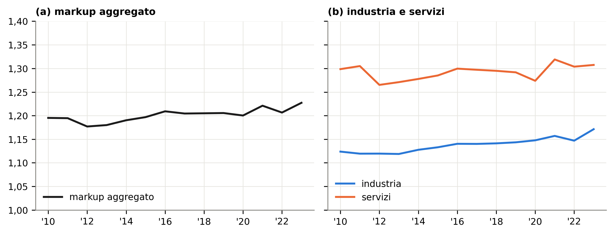
Figura 1: Ricostruzione della figura 1.1: markup aggregato (a) e per macrosettore (b), Italia 2010-2023. Elaborazione su dati Eurostat, statistiche strutturali sulle imprese.
In parole semplici: a sinistra il margine medio di tutta l’economia, che sale poco, da 1,20 a 1,23; a destra i servizi stanno sempre sopra l’industria di circa 15 punti e oscillano di più.
Come si legge. Sull’asse verticale c’è il markup: 1,20 significa prezzi del 20% sopra i costi operativi. Le linee mostrano la media ponderata di circa 450 attività.
Che cosa ne ricava il Rapporto. I margini salgono poco (lo stesso accade nei grandi paesi europei, mentre negli Stati Uniti il markup è passato da 1,21 a 1,61 fra il 1980 e il 2016 [9]). Calano nelle crisi (2012-13, 2020, 2022): con meno domanda le imprese perdono economie di scala e i costi pesano di più [1, p. 14].
Confronto con il Rapporto. Ricostruzione: 1,195 nel 2010 e 1,227 nel 2023; servizi sopra l’industria in media di 15,4 punti. Rapporto: 1,20 e 1,23, circa 15 punti (pp. 13-14).
Fonte e calcolo. Chiamate alla fonte e codice che produce i dati del grafico.
# Fonte: Eurostat, statistiche strutturali sulle imprese (SBS), API SDMX 2.1, formato SDMX-CSV
# Chiamate eseguite:
# GET https://ec.europa.eu/eurostat/api/dissemination/sdmx/2.1/data/sbs_na_ind_r2/A..V12120+
# V12170+V16110+V16130+V13310.IT+DE+FR+ES?format=SDMX-CSV&startPeriod=2008&endPeriod=2020
# GET https://ec.europa.eu/eurostat/api/dissemination/sdmx/2.1/data/sbs_na_con_r2/A..V12120+
# V12170+V16110+V16130+V13310.IT+DE+FR+ES?format=SDMX-CSV&startPeriod=2008&endPeriod=2020
# GET https://ec.europa.eu/eurostat/api/dissemination/sdmx/2.1/data/sbs_na_dt_r2/A..V12120+
# V12170+V16110+V16130+V13310.IT+DE+FR+ES?format=SDMX-CSV&startPeriod=2008&endPeriod=2020
# GET https://ec.europa.eu/eurostat/api/dissemination/sdmx/2.1/data/sbs_na_1a_se_r2/A..V12120+
# V12170+V16110+V16130+V13310.IT+DE+FR+ES?format=SDMX-CSV&startPeriod=2008&endPeriod=2020
# GET https://ec.europa.eu/eurostat/api/dissemination/sdmx/2.1/data/sbs_ovw_act/
# A..VAL_OUT_MEUR+GOS_MEUR+EMP_NR+SAL_NR+EXPN_SAL_BEN_MEUR.IT+DE+FR+ES?format=SDMX-CSV&
# startPeriod=2021
def dati_11():
w = it_()
totale = aggregate(w, ["year"]).set_index("year").mu
macro = aggregate(w, ["year", "macro"]).pivot(index="year", columns="macro", values="mu")
return totale, macro3.1.2 Figura 1.2, pagina 15: markup per livello iniziale
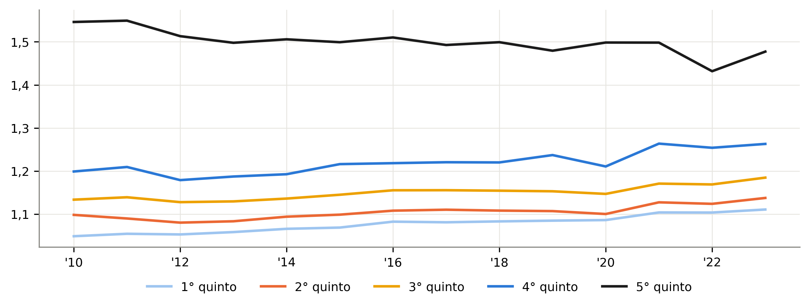
Figura 2: Ricostruzione della figura 1.2: markup dei cinque gruppi di classi formati in base al markup del 2010. Elaborazione su dati Eurostat, statistiche strutturali sulle imprese.
In parole semplici: i settori sono divisi in cinque gruppi secondo quanto guadagnavano nel 2010; il gruppo più alto scende, gli altri quattro salgono, quindi le distanze si riducono.
Come si legge. Il gruppo resta fisso per tutto il periodo: si segue che cosa accade ai settori che nel 2010 erano bassi, medi o alti.
Che cosa ne ricava il Rapporto. Il quinto più alto parte da 1,55 e perde circa 7 punti; gli altri guadagnano fra 4 e 6 punti. È la «convergenza»: il contrario di quanto ci si aspetterebbe se la crescita fosse trainata da imprese superstar.5
Confronto con il Rapporto. Ricostruzione: il quinto più alto parte da 1,55 e varia di -6,9 punti; gli altri quinti crescono fra 3,9 e 6,4 punti. Rapporto: 1,55, circa 7 punti in meno, crescita fra 4 e 6 punti (p. 15).
Fonte e calcolo. Chiamate alla fonte e codice che produce i dati del grafico.
# Fonte: Eurostat, statistiche strutturali sulle imprese (SBS), API SDMX 2.1, formato SDMX-CSV
# Chiamate eseguite:
# GET https://ec.europa.eu/eurostat/api/dissemination/sdmx/2.1/data/sbs_na_ind_r2/A..V12120+
# V12170+V16110+V16130+V13310.IT+DE+FR+ES?format=SDMX-CSV&startPeriod=2008&endPeriod=2020
# GET https://ec.europa.eu/eurostat/api/dissemination/sdmx/2.1/data/sbs_na_con_r2/A..V12120+
# V12170+V16110+V16130+V13310.IT+DE+FR+ES?format=SDMX-CSV&startPeriod=2008&endPeriod=2020
# GET https://ec.europa.eu/eurostat/api/dissemination/sdmx/2.1/data/sbs_na_dt_r2/A..V12120+
# V12170+V16110+V16130+V13310.IT+DE+FR+ES?format=SDMX-CSV&startPeriod=2008&endPeriod=2020
# GET https://ec.europa.eu/eurostat/api/dissemination/sdmx/2.1/data/sbs_na_1a_se_r2/A..V12120+
# V12170+V16110+V16130+V13310.IT+DE+FR+ES?format=SDMX-CSV&startPeriod=2008&endPeriod=2020
# GET https://ec.europa.eu/eurostat/api/dissemination/sdmx/2.1/data/sbs_ovw_act/
# A..VAL_OUT_MEUR+GOS_MEUR+EMP_NR+SAL_NR+EXPN_SAL_BEN_MEUR.IT+DE+FR+ES?format=SDMX-CSV&
# startPeriod=2021
def dati_12():
w = it_()
base = w[(w.year == 2010) & w.mu.notna()][["nace4", "mu"]]
base["quinto"] = pd.qcut(base.mu, 5, labels=[f"{i}° quinto" for i in range(1, 6)])
q = w.merge(base[["nace4", "quinto"]], on="nace4")
return aggregate(q, ["year", "quinto"]).pivot(index="year", columns="quinto", values="mu")3.1.3 Figura 1.3, pagina 16: scomposizione within, between e cross
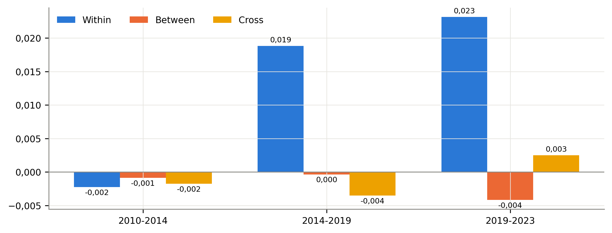
Figura 3: Ricostruzione della figura 1.3: componenti within, between e cross della variazione del markup aggregato. Elaborazione su dati Eurostat, statistiche strutturali sulle imprese.
In parole semplici: le barre blu, cioè i cambiamenti dentro i settori, spiegano quasi tutta la crescita dopo il 2014; gli spostamenti fra settori (rosso e giallo) contano poco o pesano in negativo.
Come si legge. Tre periodi: 2010-14 (crisi), 2014-19 (ripresa), 2019-23 (pandemia e crisi energetica). In ciascuno, la somma delle tre barre dà la variazione del markup medio.
Che cosa ne ricava il Rapporto. L’aumento non viene da uno spostamento dell’economia verso settori più redditizi, ma dai margini dei singoli settori, come trovato anche in altri paesi.
Confronto con il Rapporto. Ricostruzione: componente within pari a 0,019 nel 2014-19 e a 0,023 nel 2019-23. Rapporto: 0,019 e 0,023 (p. 16).
Fonte e calcolo. Chiamate alla fonte e codice che produce i dati del grafico.
# Fonte: Eurostat, statistiche strutturali sulle imprese (SBS), API SDMX 2.1, formato SDMX-CSV
# Chiamate eseguite:
# GET https://ec.europa.eu/eurostat/api/dissemination/sdmx/2.1/data/sbs_na_ind_r2/A..V12120+
# V12170+V16110+V16130+V13310.IT+DE+FR+ES?format=SDMX-CSV&startPeriod=2008&endPeriod=2020
# GET https://ec.europa.eu/eurostat/api/dissemination/sdmx/2.1/data/sbs_na_con_r2/A..V12120+
# V12170+V16110+V16130+V13310.IT+DE+FR+ES?format=SDMX-CSV&startPeriod=2008&endPeriod=2020
# GET https://ec.europa.eu/eurostat/api/dissemination/sdmx/2.1/data/sbs_na_dt_r2/A..V12120+
# V12170+V16110+V16130+V13310.IT+DE+FR+ES?format=SDMX-CSV&startPeriod=2008&endPeriod=2020
# GET https://ec.europa.eu/eurostat/api/dissemination/sdmx/2.1/data/sbs_na_1a_se_r2/A..V12120+
# V12170+V16110+V16130+V13310.IT+DE+FR+ES?format=SDMX-CSV&startPeriod=2008&endPeriod=2020
# GET https://ec.europa.eu/eurostat/api/dissemination/sdmx/2.1/data/sbs_ovw_act/
# A..VAL_OUT_MEUR+GOS_MEUR+EMP_NR+SAL_NR+EXPN_SAL_BEN_MEUR.IT+DE+FR+ES?format=SDMX-CSV&
# startPeriod=2021
def dati_13():
w = it_()
return pd.DataFrame([decompose(w, a, b) for a, b in [(2010, 2014), (2014, 2019), (2019, 2023)]])3.1.4 Figura 1.4, pagina 17: markup per sezione Ateco
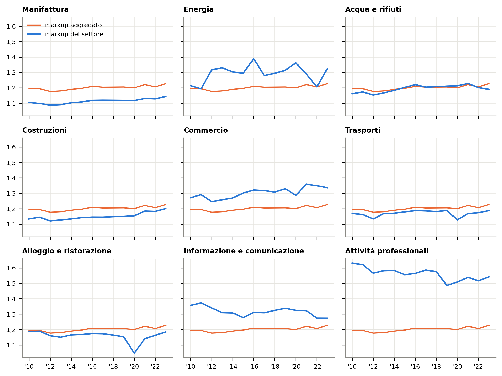
Figura 4: Ricostruzione della figura 1.4 (a): markup di nove sezioni Ateco e markup aggregato, livelli. Elaborazione su dati Eurostat, statistiche strutturali sulle imprese.
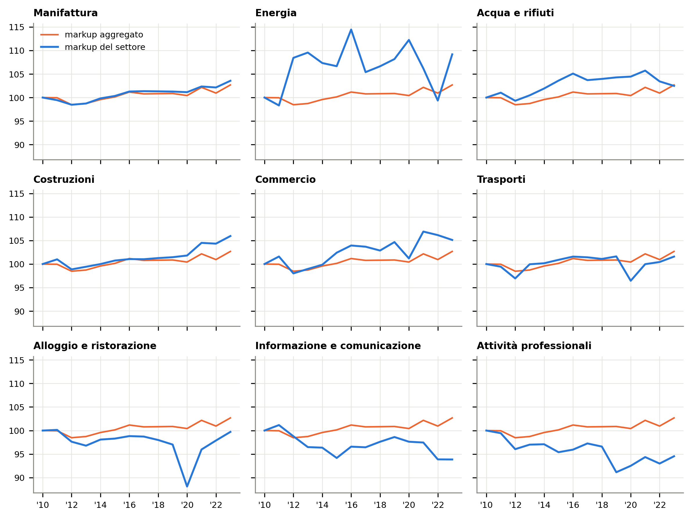
Figura 5: Ricostruzione della figura 1.4 (b): markup di nove sezioni Ateco e markup aggregato, indice 2010 = 100. Elaborazione su dati Eurostat, statistiche strutturali sulle imprese.
In parole semplici: nove riquadri, uno per grande settore; la linea blu è il settore, quella rossa la media. In alto si vedono i livelli, in basso quanto ciascuno è cresciuto rispetto al 2010.
Come si legge. Nel pannello (a) conta la distanza fra le due linee: blu sopra rossa significa margini sopra la media. Nel pannello (b) entrambe partono da 100 nel 2010, quindi si confronta solo la crescita.
Che cosa ne ricava il Rapporto. Manifattura sotto la media (1,11 contro 1,20 nella media del periodo) ma con crescita uguale; commercio da 1,27 a 1,34; energia +11 punti, con un crollo nel 2022 per il prezzo del gas; professioni e informazione e comunicazione sopra la media ma in calo; alberghi e ristoranti sotto la media dal 2012 e molto colpiti nel 2020; costruzioni sotto la media fino al 2020, poi risalite con PNRR e bonus edilizi [1, pp. 16–18].
Confronto con il Rapporto. Ricostruzione: manifattura in media 1,11 contro 1,20 dell’aggregato; commercio da 1,27 a 1,34; energia 11,1 punti; manifattura 3,9 punti. Rapporto: 1,11 e 1,20; da 1,27 a 1,34; 11 punti; circa 4 punti (pp. 16-17).
Fonte e calcolo. Chiamate alla fonte e codice che produce i dati del grafico.
# Fonte: Eurostat, statistiche strutturali sulle imprese (SBS), API SDMX 2.1, formato SDMX-CSV
# Chiamate eseguite:
# GET https://ec.europa.eu/eurostat/api/dissemination/sdmx/2.1/data/sbs_na_ind_r2/A..V12120+
# V12170+V16110+V16130+V13310.IT+DE+FR+ES?format=SDMX-CSV&startPeriod=2008&endPeriod=2020
# GET https://ec.europa.eu/eurostat/api/dissemination/sdmx/2.1/data/sbs_na_con_r2/A..V12120+
# V12170+V16110+V16130+V13310.IT+DE+FR+ES?format=SDMX-CSV&startPeriod=2008&endPeriod=2020
# GET https://ec.europa.eu/eurostat/api/dissemination/sdmx/2.1/data/sbs_na_dt_r2/A..V12120+
# V12170+V16110+V16130+V13310.IT+DE+FR+ES?format=SDMX-CSV&startPeriod=2008&endPeriod=2020
# GET https://ec.europa.eu/eurostat/api/dissemination/sdmx/2.1/data/sbs_na_1a_se_r2/A..V12120+
# V12170+V16110+V16130+V13310.IT+DE+FR+ES?format=SDMX-CSV&startPeriod=2008&endPeriod=2020
# GET https://ec.europa.eu/eurostat/api/dissemination/sdmx/2.1/data/sbs_ovw_act/
# A..VAL_OUT_MEUR+GOS_MEUR+EMP_NR+SAL_NR+EXPN_SAL_BEN_MEUR.IT+DE+FR+ES?format=SDMX-CSV&
# startPeriod=2021
def dati_14():
w = it_()
sezioni = aggregate(w, ["year", "sec"]).pivot(index="year", columns="sec", values="mu")
totale = aggregate(w, ["year"]).set_index("year").mu
return sezioni, totale3.1.5 Figura 1.5, pagina 18: markup per divisione, inizio contro fine periodo
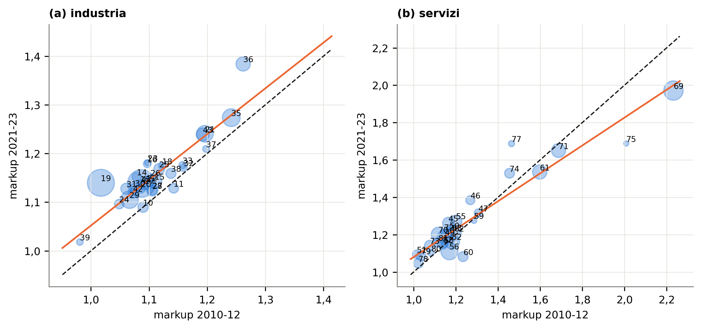
Figura 6: Ricostruzione della figura 1.5: markup medio 2010-12 e 2021-23 per divisione Ateco, industria (a) e servizi (b). Elaborazione su dati Eurostat, statistiche strutturali sulle imprese.
In parole semplici: ogni bolla è un settore; se sta sopra la linea tratteggiata il suo margine è cresciuto, se sta sotto è calato. Nell’industria quasi tutte le bolle sono sopra; nei servizi quelle più a destra, cioè i settori che guadagnavano di più, scendono sotto la linea.
Come si legge. La linea tratteggiata a 45 gradi indica «nessun cambiamento». La linea rossa è la tendenza: se è più piatta della tratteggiata, chi partiva alto cresce meno di chi partiva basso. La grandezza della bolla indica il peso del settore.
Che cosa ne ricava il Rapporto. Nell’industria tutti i settori salgono più o meno della stessa misura, tranne alimentare (10) e bevande (11), stabili; acqua (36) ed energia (35) sono i più alti. Nei servizi la linea rossa è più piatta: convergenza. Le attività legali e contabili (69) restano intorno a 2; 22 settori su 29 crescono o restano stabili, 7 scendono [1, p. 19].
Confronto con il Rapporto. Ricostruzione: nell’industria 30 divisioni su 31 stanno sopra la diagonale, pendenza della tendenza 0,94; nei servizi pendenza 0,75; attività legali e contabili (69) da 2,23 a 1,97. Rapporto: industria quasi tutta sopra la retta, pendenza vicina a uno; servizi con pendenza più bassa; divisione 69 intorno a 2 in entrambi i periodi (pp. 18-19).
Fonte e calcolo. Chiamate alla fonte e codice che produce i dati del grafico.
# Fonte: Eurostat, statistiche strutturali sulle imprese (SBS), API SDMX 2.1, formato SDMX-CSV
# Chiamate eseguite:
# GET https://ec.europa.eu/eurostat/api/dissemination/sdmx/2.1/data/sbs_na_ind_r2/A..V12120+
# V12170+V16110+V16130+V13310.IT+DE+FR+ES?format=SDMX-CSV&startPeriod=2008&endPeriod=2020
# GET https://ec.europa.eu/eurostat/api/dissemination/sdmx/2.1/data/sbs_na_con_r2/A..V12120+
# V12170+V16110+V16130+V13310.IT+DE+FR+ES?format=SDMX-CSV&startPeriod=2008&endPeriod=2020
# GET https://ec.europa.eu/eurostat/api/dissemination/sdmx/2.1/data/sbs_na_dt_r2/A..V12120+
# V12170+V16110+V16130+V13310.IT+DE+FR+ES?format=SDMX-CSV&startPeriod=2008&endPeriod=2020
# GET https://ec.europa.eu/eurostat/api/dissemination/sdmx/2.1/data/sbs_na_1a_se_r2/A..V12120+
# V12170+V16110+V16130+V13310.IT+DE+FR+ES?format=SDMX-CSV&startPeriod=2008&endPeriod=2020
# GET https://ec.europa.eu/eurostat/api/dissemination/sdmx/2.1/data/sbs_ovw_act/
# A..VAL_OUT_MEUR+GOS_MEUR+EMP_NR+SAL_NR+EXPN_SAL_BEN_MEUR.IT+DE+FR+ES?format=SDMX-CSV&
# startPeriod=2021
def dati_15():
w = it_()
dv = aggregate(w, ["year", "sec", "div"])
inizio = dv[dv.year.between(2010, 2012)].groupby(["sec", "div"]).mu.mean()
fine = dv[dv.year.between(2021, 2023)].groupby(["sec", "div"]).mu.mean()
peso = w.groupby(["sec", "div"]).vp.mean()
p = pd.concat([inizio.rename("ini"), fine.rename("fin"), peso.rename("vp")], axis=1).dropna().reset_index()
p = p[p["div"] != 12] # tabacco escluso, come nelle figure settoriali del Rapporto
p["macro"] = np.where(p.sec.isin(INDUSTRIA), "industria", "servizi")
return p3.1.6 Figura 1.6, pagina 20: livello iniziale e crescita del markup
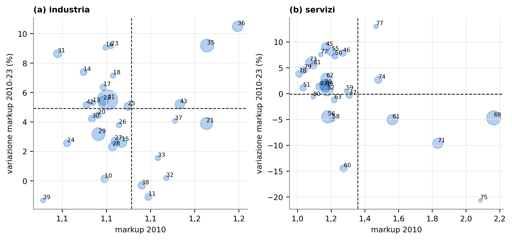
Figura 7: Ricostruzione della figura 1.6: markup 2010 e sua variazione 2010-2023 per divisione, industria (a) e servizi (b). Elaborazione su dati Eurostat, statistiche strutturali sulle imprese.
In parole semplici: le linee tratteggiate dividono il grafico in quattro quadranti. Chi parte basso e cresce molto (in alto a sinistra) o parte alto e cresce poco (in basso a destra) avvicina tutti alla media; chi parte alto e cresce molto, o basso e cresce poco, allarga le distanze.
Che cosa ne ricava il Rapporto. Nell’industria allargano le distanze l’energia (35, alto e in crescita) e alimentare (10), metallurgia (24) e macchinari (28), bassi e poco dinamici. Nei servizi prevale l’avvicinamento: commercio all’ingrosso (46) parte basso e cresce; commercio al dettaglio (47), telecomunicazioni (61) e studi legali e contabili (69) partono alti e scendono. La ristorazione (56) è il caso principale di settore basso che resta indietro [1, p. 20].
Confronto con il Rapporto. Ricostruzione: il valore della produzione nei quadranti di convergenza è il 54% nell’industria e il 79% nei servizi. Rapporto: nei servizi prevalgono i comparti che riducono la dispersione (p. 20).
Fonte e calcolo. Chiamate alla fonte e codice che produce i dati del grafico.
# Fonte: Eurostat, statistiche strutturali sulle imprese (SBS), API SDMX 2.1, formato SDMX-CSV
# Chiamate eseguite:
# GET https://ec.europa.eu/eurostat/api/dissemination/sdmx/2.1/data/sbs_na_ind_r2/A..V12120+
# V12170+V16110+V16130+V13310.IT+DE+FR+ES?format=SDMX-CSV&startPeriod=2008&endPeriod=2020
# GET https://ec.europa.eu/eurostat/api/dissemination/sdmx/2.1/data/sbs_na_con_r2/A..V12120+
# V12170+V16110+V16130+V13310.IT+DE+FR+ES?format=SDMX-CSV&startPeriod=2008&endPeriod=2020
# GET https://ec.europa.eu/eurostat/api/dissemination/sdmx/2.1/data/sbs_na_dt_r2/A..V12120+
# V12170+V16110+V16130+V13310.IT+DE+FR+ES?format=SDMX-CSV&startPeriod=2008&endPeriod=2020
# GET https://ec.europa.eu/eurostat/api/dissemination/sdmx/2.1/data/sbs_na_1a_se_r2/A..V12120+
# V12170+V16110+V16130+V13310.IT+DE+FR+ES?format=SDMX-CSV&startPeriod=2008&endPeriod=2020
# GET https://ec.europa.eu/eurostat/api/dissemination/sdmx/2.1/data/sbs_ovw_act/
# A..VAL_OUT_MEUR+GOS_MEUR+EMP_NR+SAL_NR+EXPN_SAL_BEN_MEUR.IT+DE+FR+ES?format=SDMX-CSV&
# startPeriod=2021
def dati_16():
w = it_()
dv = aggregate(w, ["year", "sec", "div"])
m10 = dv[dv.year == 2010].set_index(["sec", "div"]).mu
m23 = dv[dv.year == 2023].set_index(["sec", "div"]).mu
peso = w.groupby(["sec", "div"]).vp.mean()
q = pd.concat([m10.rename("m10"), (100 * (m23 / m10 - 1)).rename("crescita"), peso.rename("vp")],
axis=1).dropna().reset_index()
q = q[q["div"] != 12]
q["macro"] = np.where(q.sec.isin(INDUSTRIA), "industria", "servizi")
return q3.1.7 Figura 1.7, pagina 21: markup e costi fissi
La figura 1.7 non è riprodotta in questa versione: si trova a p. 21 del Rapporto [1], consultabile su https://www.bancaditalia.it/pubblicazioni/altri-rapporti/2026-concorrenza-in-italia/Rapporto-BI-AGCM-20261105.pdf. La descrizione che segue si riferisce a quella figura.
In parole semplici: i settori con molte spese fisse (affitti, servizi, ammortamenti) hanno margini più alti, perché devono ripagarle; la distanza dagli altri però si riduce, perché salgono i settori con pochi costi fissi.
Come si legge. La soglia fra «alta» e «bassa» incidenza è la mediana, pari al 31% dei ricavi; i costi fissi sono misurati con i bilanci Cerved [1, p. 21].
3.1.8 Figura 1.8, pagina 23: markup, ricerca e conoscenza
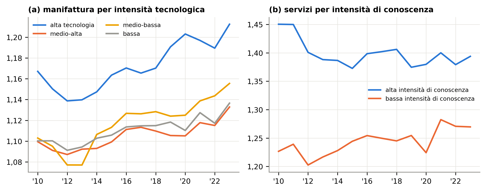
Figura 8: Ricostruzione della figura 1.8: markup della manifattura per intensità tecnologica (a) e dei servizi per intensità di conoscenza (b). Elaborazione su dati Eurostat, statistiche strutturali sulle imprese.
In parole semplici: nella manifattura i settori che spendono di più in ricerca hanno margini più alti e in crescita; nei servizi quelli con molti laureati guadagnano di più, ma la distanza dagli altri si riduce.
Come si legge. Nei servizi «ad alta intensità di conoscenza» oltre il 33% degli occupati ha una laurea; i gruppi seguono classificazioni Eurostat [1, p. 22].
Confronto con il Rapporto. Ricostruzione: manifattura ad alta tecnologia da 1,17 a 1,21; vantaggio dei servizi ad alta intensità di conoscenza da 0,22 a 0,12. Rapporto: manifattura high-tech sopra gli altri e in crescita; divario dei servizi in riduzione (p. 22). Il pannello (a) del Rapporto raggruppa per incidenza della spesa in ricerca e sviluppo; qui si usa la classificazione Eurostat per intensità tecnologica, che si basa sullo stesso criterio a livello di divisione.
Fonte e calcolo. Chiamate alla fonte e codice che produce i dati del grafico.
# Fonte: Eurostat, statistiche strutturali sulle imprese (SBS), API SDMX 2.1, formato SDMX-CSV
# Chiamate eseguite:
# GET https://ec.europa.eu/eurostat/api/dissemination/sdmx/2.1/data/sbs_na_ind_r2/A..V12120+
# V12170+V16110+V16130+V13310.IT+DE+FR+ES?format=SDMX-CSV&startPeriod=2008&endPeriod=2020
# GET https://ec.europa.eu/eurostat/api/dissemination/sdmx/2.1/data/sbs_na_con_r2/A..V12120+
# V12170+V16110+V16130+V13310.IT+DE+FR+ES?format=SDMX-CSV&startPeriod=2008&endPeriod=2020
# GET https://ec.europa.eu/eurostat/api/dissemination/sdmx/2.1/data/sbs_na_dt_r2/A..V12120+
# V12170+V16110+V16130+V13310.IT+DE+FR+ES?format=SDMX-CSV&startPeriod=2008&endPeriod=2020
# GET https://ec.europa.eu/eurostat/api/dissemination/sdmx/2.1/data/sbs_na_1a_se_r2/A..V12120+
# V12170+V16110+V16130+V13310.IT+DE+FR+ES?format=SDMX-CSV&startPeriod=2008&endPeriod=2020
# GET https://ec.europa.eu/eurostat/api/dissemination/sdmx/2.1/data/sbs_ovw_act/
# A..VAL_OUT_MEUR+GOS_MEUR+EMP_NR+SAL_NR+EXPN_SAL_BEN_MEUR.IT+DE+FR+ES?format=SDMX-CSV&
# startPeriod=2021
def dati_18():
w = it_()
man = w[w.sec == "C"].copy()
man["gruppo"] = man["div"].map({d: g for g, ds in TECH.items() for d in ds}) # classificazione Eurostat
tecnologia = aggregate(man.dropna(subset=["gruppo"]), ["year", "gruppo"]).pivot(
index="year", columns="gruppo", values="mu")
srv = w[w.sec.isin(SERVIZI)].copy()
srv["gruppo"] = np.where(srv["div"].isin(KIS), "alta intensità di conoscenza", "bassa intensità di conoscenza")
conoscenza = aggregate(srv, ["year", "gruppo"]).pivot(index="year", columns="gruppo", values="mu")
return tecnologia, conoscenza3.1.9 Figura A, pagina 24: professioni regolate e non regolate
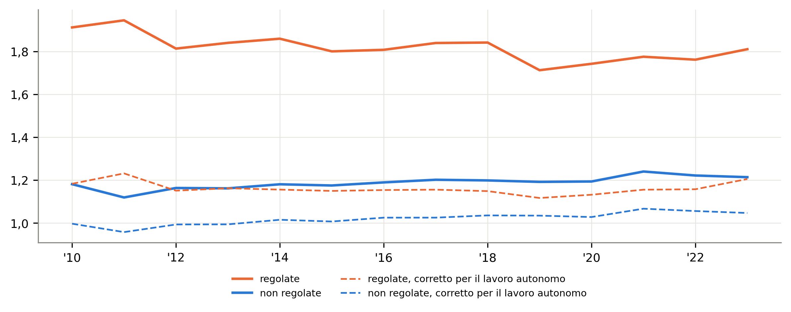
Figura 9: Ricostruzione della figura A: markup delle professioni regolate e non regolate, non corretto e corretto per il lavoro autonomo. Elaborazione su dati Eurostat, statistiche strutturali sulle imprese.
In parole semplici: avvocati, notai, commercialisti, architetti, ingegneri e veterinari (professioni regolate) hanno margini molto più alti delle professioni libere da vincoli, come consulenza, design o traduzione.
Come si legge. Sono «regolate» le sette attività con vincoli di accesso o di condotta secondo indicatori della Banca d’Italia; le «non regolate» sono dodici attività con tutti gli indicatori a zero dal 2008 al 2023 [1, p. 24].
Che cosa ne ricava il Rapporto. Le non regolate partono da 1,18 nel 2010 e crescono poco; le regolate restano molto più in alto, con una media di 1,81 sull’intero periodo; le liberalizzazioni del 2012 comprimono i margini delle regolate fino al 2019. La nota alla figura parla di markup corretto per il lavoro autonomo, ma ricostruita con i dati Eurostat delle statistiche strutturali sulle imprese la serie coincide, anno per anno, con il markup non corretto [2], [3]; con la correzione i livelli sarebbero molto più bassi, fra 1,12 e 1,23 per le regolate.
Confronto con il Rapporto. Ricostruzione: regolate in media 1,82, non regolate 1,18 nel 2010 (markup non corretto); con la correzione le regolate stanno fra 1,12 e 1,23. Rapporto: 1,81 e 1,18 (p. 24), cioè i valori del markup non corretto.
Fonte e calcolo. Chiamate alla fonte e codice che produce i dati del grafico.
# Fonte: Eurostat, statistiche strutturali sulle imprese (SBS), API SDMX 2.1, formato SDMX-CSV
# Chiamate eseguite:
# GET https://ec.europa.eu/eurostat/api/dissemination/sdmx/2.1/data/sbs_na_ind_r2/A..V12120+
# V12170+V16110+V16130+V13310.IT+DE+FR+ES?format=SDMX-CSV&startPeriod=2008&endPeriod=2020
# GET https://ec.europa.eu/eurostat/api/dissemination/sdmx/2.1/data/sbs_na_con_r2/A..V12120+
# V12170+V16110+V16130+V13310.IT+DE+FR+ES?format=SDMX-CSV&startPeriod=2008&endPeriod=2020
# GET https://ec.europa.eu/eurostat/api/dissemination/sdmx/2.1/data/sbs_na_dt_r2/A..V12120+
# V12170+V16110+V16130+V13310.IT+DE+FR+ES?format=SDMX-CSV&startPeriod=2008&endPeriod=2020
# GET https://ec.europa.eu/eurostat/api/dissemination/sdmx/2.1/data/sbs_na_1a_se_r2/A..V12120+
# V12170+V16110+V16130+V13310.IT+DE+FR+ES?format=SDMX-CSV&startPeriod=2008&endPeriod=2020
# GET https://ec.europa.eu/eurostat/api/dissemination/sdmx/2.1/data/sbs_ovw_act/
# A..VAL_OUT_MEUR+GOS_MEUR+EMP_NR+SAL_NR+EXPN_SAL_BEN_MEUR.IT+DE+FR+ES?format=SDMX-CSV&
# startPeriod=2021
def dati_A():
w = it_()
pr = w[w.nace4.isin(PROF_REGOLATE + PROF_NON_REGOLATE)].copy() # elenchi della nota 35 del Rapporto
pr["gruppo"] = np.where(pr.nace4.isin(PROF_REGOLATE), "regolate", "non regolate")
markup = aggregate(pr, ["year", "gruppo"]).pivot(index="year", columns="gruppo", values="mu")
corretto = aggregate(pr, ["year", "gruppo"], "mu_c").pivot(index="year", columns="gruppo", values="mu_c")
return markup, corretto3.1.10 Figura B, pagina 25: markup e intensità della regolamentazione
La figura B non è riprodotta in questa versione: si trova a p. 25 del Rapporto [1], consultabile su https://www.bancaditalia.it/pubblicazioni/altri-rapporti/2026-concorrenza-in-italia/Rapporto-BI-AGCM-20261105.pdf. La descrizione che segue si riferisce a quella figura.
In parole semplici: ogni punto è una professione; più la professione è regolata (spostandosi a destra), più alto è il suo margine.
Come si legge. I codici sono classi Ateco: 6910 studi legali e notarili, 6920 contabilità, 7111 architettura, 7112 ingegneria, 7312 concessionarie di pubblicità, 7490 altre attività professionali, 7500 veterinari. Con sette punti la retta è indicativa.
Che cosa ne ricava il Rapporto. Correlazione di 0,82 con i requisiti professionali, 0,65 con gli oneri amministrativi e 0,80 con i vincoli di condotta, tutte statisticamente significative [1, p. 25]. Una correlazione dice che le due cose vanno insieme, non quale causa l’altra.
3.2 Capitolo 2: struttura di mercato
3.2.1 Figura 2.1, pagina 28: HHI e CR4 aggregati
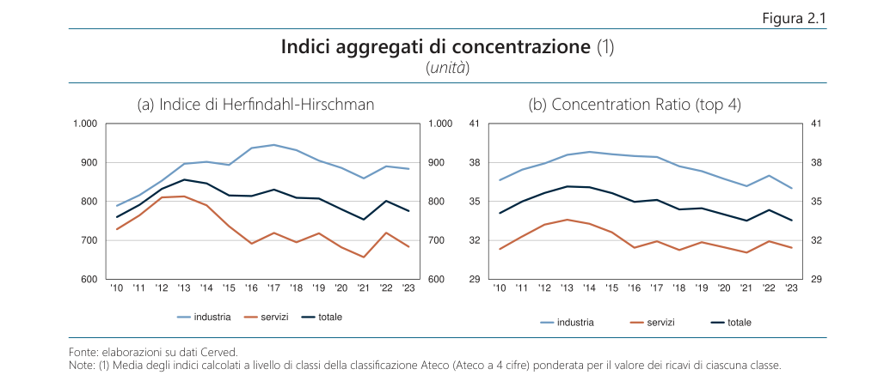
Figura 2.1 del Rapporto: indice di Herfindahl-Hirschman (a) e quota delle prime quattro imprese (b), industria, servizi e totale.
In parole semplici: la concentrazione sale fino al 2013-14, negli anni della crisi, poi scende e nel 2023 torna vicina al 2010. L’industria è sempre più concentrata dei servizi.
Come si legge. L’HHI medio fra 750 e 850 è sotto la soglia di 1.000, quindi «non concentrato»; il CR4 medio resta sotto il 34% [1, p. 27]. Le medie però nascondono undici divisioni con HHI oltre 2.000 e dodici con CR4 oltre il 60%: circa l’8% del fatturato.
Che cosa ne ricava il Rapporto. HHI +10% e CR4 +6% fra 2010 e 2014, poi ritorno ai valori iniziali; variazione complessiva del CR4 quasi nulla.
3.2.2 Figura 2.2, pagina 29: quanti settori sono concentrati
La figura 2.2 non è riprodotta in questa versione: si trova a p. 29 del Rapporto [1], consultabile su https://www.bancaditalia.it/pubblicazioni/altri-rapporti/2026-concorrenza-in-italia/Rapporto-BI-AGCM-20261105.pdf. La descrizione che segue si riferisce a quella figura.
In parole semplici: la maggior parte dei settori è poco concentrata, ma fra il 2010 e il 2023 cresce un po’ la quota di settori molto concentrati.
Come si legge. Ogni coppia di barre conta le classi Ateco che cadono in una fascia, nel 2010 (chiaro) e nel 2023 (scuro).
3.2.3 Figura 2.3, pagina 30: scomposizione del CR4
La figura 2.3 non è riprodotta in questa versione: si trova a p. 30 del Rapporto [1], consultabile su https://www.bancaditalia.it/pubblicazioni/altri-rapporti/2026-concorrenza-in-italia/Rapporto-BI-AGCM-20261105.pdf. La descrizione che segue si riferisce a quella figura.
In parole semplici: fino al 2014 la concentrazione sale soprattutto dentro i settori (blu), per effetto della crisi; dopo scende soprattutto perché crescono i settori meno concentrati (rosso, «between»).
Come si legge. Il rombo è la variazione totale del CR4; le barre colorate sono i contributi delle tre componenti.
Che cosa ne ricava il Rapporto. Nell’industria del 2010-14 pesa anche la crescita di settori già concentrati come metallurgia (24) ed energia (35). Lo spostamento dall’industria ai servizi (dal 48% al 54% del fatturato) abbassa la concentrazione in tutti i periodi [1, pp. 28–30].
3.2.4 Figura 2.4, pagina 31: CR4 nell’industria
La figura 2.4 non è riprodotta in questa versione: si trova a p. 31 del Rapporto [1], consultabile su https://www.bancaditalia.it/pubblicazioni/altri-rapporti/2026-concorrenza-in-italia/Rapporto-BI-AGCM-20261105.pdf. La descrizione che segue si riferisce a quella figura.
In parole semplici: nell’energia le prime quattro imprese fanno circa il 60% delle vendite e la quota cresce; nella manifattura circa il 35%, in acqua e rifiuti circa il 45%; nelle costruzioni meno del 20%, perché ci sono moltissime piccole imprese.
3.2.5 Figura 2.5, pagina 31: CR4 nei servizi
La figura 2.5 non è riprodotta in questa versione: si trova a p. 31 del Rapporto [1], consultabile su https://www.bancaditalia.it/pubblicazioni/altri-rapporti/2026-concorrenza-in-italia/Rapporto-BI-AGCM-20261105.pdf. La descrizione che segue si riferisce a quella figura.
In parole semplici: informazione e comunicazione (telecomunicazioni, televisioni) è il comparto più concentrato, seguito da trasporti e servizi alle imprese; le professioni crescono dopo la pandemia; nel 2020 sale per poco la concentrazione di alberghi e ristoranti.
3.2.6 Figura 2.6, pagina 32: CR4 per divisione, 2010 contro 2023
La figura 2.6 non è riprodotta in questa versione: si trova a p. 32 del Rapporto [1], consultabile su https://www.bancaditalia.it/pubblicazioni/altri-rapporti/2026-concorrenza-in-italia/Rapporto-BI-AGCM-20261105.pdf. La descrizione che segue si riferisce a quella figura.
In parole semplici: come nella figura 1.5, sopra la linea tratteggiata la concentrazione è salita. In alto a destra stanno i settori dove pochissime imprese fanno quasi tutto: raffinazione (19), poste (53), televisioni (60), telecomunicazioni (61), trasporto aereo (51).
Che cosa ne ricava il Rapporto. Nell’industria cambiamenti modesti, con l’abbigliamento (14) in aumento e le riparazioni (33) in calo; acqua (36) e fognature (37) alte ma in calo. Nei servizi salgono trasporto marittimo (50), aereo (51), consulenza gestionale (70), supporto amministrativo (82), noleggio (77) e vigilanza (80). Il valore alto degli studi legali e contabili (69) può dipendere dalla scarsa copertura dei bilanci Cerved [1, pp. 32–33].
3.3 Capitolo 3: dinamismo imprenditoriale
3.3.1 Figura 3.1, pagina 35: nascite, chiusure e saldo
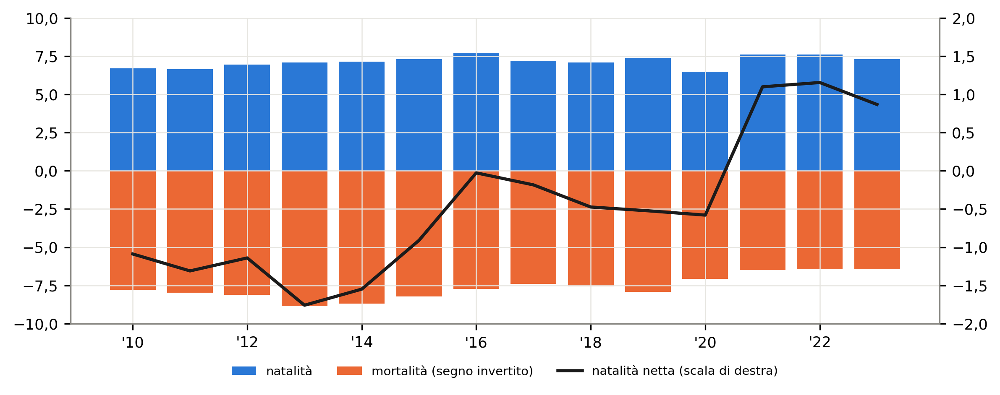
Figura 10: Ricostruzione della figura 3.1: tassi di natalità e mortalità delle imprese e natalità netta. Elaborazione su dati Istat, demografia d’impresa.
In parole semplici: le barre blu sono le imprese nate, quelle rosse, verso il basso, le imprese chiuse; la linea nera è la differenza. Fino al 2020 chiudono più imprese di quante ne nascano; dal 2021 il saldo diventa positivo, soprattutto perché chiudono meno imprese.
Che cosa ne ricava il Rapporto. La mortalità supera il 9% nel 2013 e poi scende molto dopo la pandemia, anche grazie alle misure di sostegno. Natalità e mortalità italiane sono più basse della media europea, di circa 3 e 2 punti nel 2021-23 [1, pp. 34–35].
Confronto con il Rapporto. Ricostruzione con la serie complessiva pubblicata dall’Istat, la fonte del Rapporto: natalità netta negativa in 11 anni su 11 fra il 2010 e il 2020, positiva dal 2021; mortalità massima 8,8% nel 2013; il 2023 è provvisorio. Rapporto: negativa quasi ininterrottamente fino al 2020, positiva dal 2021, mortalità oltre il 9% nel 2013 sulle sole sezioni C-N (pp. 34-35).
Fonte e calcolo. Chiamate alla fonte e codice che produce i dati del grafico.
# Fonte: Istat, Demografia d'impresa - Anni 2018-2023: pagina delle tavole e archivio xlsx
# Chiamate eseguite:
# GET https://www.istat.it/tavole-di-dati/demografia-dimpresa-anni-2018-2023/
# GET https://www.istat.it/wp-content/uploads/2025/07/TAVOLE.zip
def dati_31():
return demo_istat()[["natalita", "mortalita", "netta", "provvisorio"]]3.3.2 Figura 3.2, pagina 36: nascite e chiusure per macrosettore
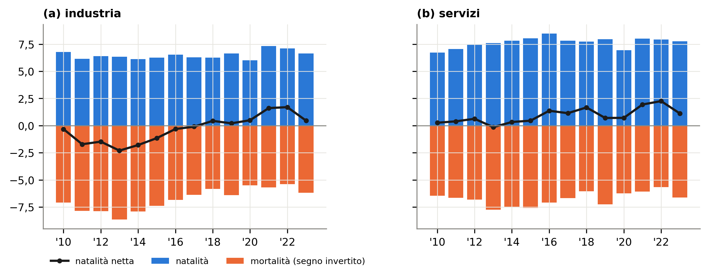
Figura 11: Ricostruzione della figura 3.2: natalità, mortalità e natalità netta nell’industria (a) e nei servizi (b). Elaborazione su dati Eurostat, demografia d’impresa.
In parole semplici: nell’industria la crisi del 2013 fa chiudere molte più imprese di quante ne nascano; poi il saldo migliora e diventa positivo. Nei servizi le oscillazioni sono più piccole.
Confronto con il Rapporto. Ricostruzione con Eurostat, perché l’Istat pubblica la serie per macrosettore solo dal 2018. Nel 2021-23 l’Italia ha natalità 7,7% contro 10,6% dell’UE e mortalità 6,0% contro 8,2%: come nel Rapporto, circa 3 e 2 punti in meno (p. 34). L’industria ha lo stesso andamento del Rapporto; nei servizi Eurostat registra una natalità netta positiva in quasi tutti gli anni 2010-2015, il Rapporto negativa: le due fonti identificano nascite e cessazioni con regole diverse, e i livelli non sono confrontabili.
Fonte e calcolo. Chiamate alla fonte e codice che produce i dati del grafico.
# Fonte: Eurostat, demografia d'impresa, API statistics 1.0, formato JSON-stat
# Chiamate eseguite:
# GET https://ec.europa.eu/eurostat/api/dissemination/statistics/1.0/data/bd_9ac_l_form_r2?
# geo=IT&geo=EU27_2020&nace_r2=C&nace_r2=D&nace_r2=E&nace_r2=F&nace_r2=G&nace_r2=H&
# nace_r2=I&nace_r2=J&nace_r2=M&nace_r2=N&leg_form=TOTAL&indic_sb=V11910&indic_sb=V11920&
# indic_sb=V11930&lang=EN
# GET https://ec.europa.eu/eurostat/api/dissemination/statistics/1.0/data/bd_l_form?geo=IT&
# geo=EU27_2020&nace_r2=C&nace_r2=D&nace_r2=E&nace_r2=F&nace_r2=G&nace_r2=H&nace_r2=I&
# nace_r2=J&nace_r2=M&nace_r2=N&leg_form=TOTAL&indic_sbs=ENT_NR&indic_sbs=ENT_BRTH_NR&
# indic_sbs=ENT_DTH_NR&lang=EN
def dati_32():
d = demo_eurostat()
d = d[d.geo == "IT"].copy()
d["macro"] = np.where(d.sec.isin(INDUSTRIA), "industria", "servizi")
return rates(d, ["macro", "year"])3.3.3 Figura 3.3, pagina 37: entrenchment
La figura 3.3 non è riprodotta in questa versione: si trova a p. 37 del Rapporto [1], consultabile su https://www.bancaditalia.it/pubblicazioni/altri-rapporti/2026-concorrenza-in-italia/Rapporto-BI-AGCM-20261105.pdf. La descrizione che segue si riferisce a quella figura.
In parole semplici: nel 2023, delle prime quattro imprese di un settore in media 3,4 erano fra le prime quattro anche l’anno prima; delle prime dieci, circa 8,7. Dopo il 2018 il valore scende un po’.
Che cosa ne ricava il Rapporto. Valori vicini al massimo indicano barriere che proteggono i leader; il calo è di circa il 6% fra il 2018 e il 2023, più marcato nei servizi. L’Italia è leggermente sopra i principali paesi europei, per i quali l’OCSE stima 3,3-3,4 nel 2019 [1, p. 37], [10].
3.3.4 Figura 3.4, pagina 37: entrenchment per sezione
La figura 3.4 non è riprodotta in questa versione: si trova a p. 37 del Rapporto [1], consultabile su https://www.bancaditalia.it/pubblicazioni/altri-rapporti/2026-concorrenza-in-italia/Rapporto-BI-AGCM-20261105.pdf. La descrizione che segue si riferisce a quella figura.
In parole semplici: le sezioni sono quasi tutte vicine a 3,5; costruzioni (F) e alberghi e ristoranti (I) sono più mobili, e gli alberghi e ristoranti hanno anche il calo più forte.
3.3.5 Figura 3.5, pagina 38: entrenchment per divisione
La figura 3.5 non è riprodotta in questa versione: si trova a p. 38 del Rapporto [1], consultabile su https://www.bancaditalia.it/pubblicazioni/altri-rapporti/2026-concorrenza-in-italia/Rapporto-BI-AGCM-20261105.pdf. La descrizione che segue si riferisce a quella figura.
In parole semplici: sopra la linea tratteggiata i leader sono diventati più stabili. Salgono raffinazione (19), auto (29), trasporto marittimo (50) e aereo (51), software (62) e servizi di informazione (63); scendono bevande (11) e magazzinaggio (52).
3.3.6 Figura 3.6, pagina 39: entrenchment su più anni
La figura 3.6 non è riprodotta in questa versione: si trova a p. 39 del Rapporto [1], consultabile su https://www.bancaditalia.it/pubblicazioni/altri-rapporti/2026-concorrenza-in-italia/Rapporto-BI-AGCM-20261105.pdf. La descrizione che segue si riferisce a quella figura.
In parole semplici: anche chiedendo che un’impresa resti fra le prime quattro per due o tre anni di fila, nel 2023 ne restano in media 3,1 e 2,8: la stabilità non è un effetto di un solo anno.
3.3.7 Figura 3.7, pagina 39: nuovi ingressi in testa e durata della leadership
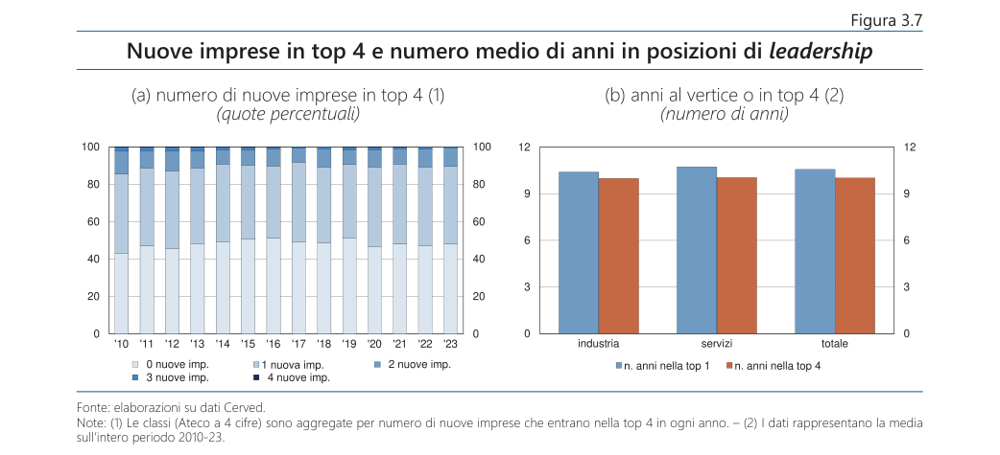
Figura 3.7 del Rapporto: quota di classi per numero di nuove imprese entrate fra le prime 4 (a) e anni medi passati al primo posto o fra le prime 4 (b).
In parole semplici: in quasi metà dei settori nessuna impresa nuova entra fra le prime quattro in un anno, e in un altro 40% ne entra una sola; chi arriva in testa ci resta in media circa dieci anni.
Che cosa ne ricava il Rapporto. Nei principali paesi europei l’OCSE stima una permanenza fra 6,4 e 8,5 anni [1, p. 39].
3.3.8 Figura 3.8, pagina 40: rank persistence index
La figura 3.8 non è riprodotta in questa versione: si trova a p. 40 del Rapporto [1], consultabile su https://www.bancaditalia.it/pubblicazioni/altri-rapporti/2026-concorrenza-in-italia/Rapporto-BI-AGCM-20261105.pdf. La descrizione che segue si riferisce a quella figura.
In parole semplici: l’indice, vicino a 1 quando la classifica non cambia, resta alto (circa 0,85 nel 2023), ma nell’industria scende dal 2017-18, segno di classifiche un po’ più mosse.
3.3.9 Tavola 3.1, pagina 41: matrice di transizione
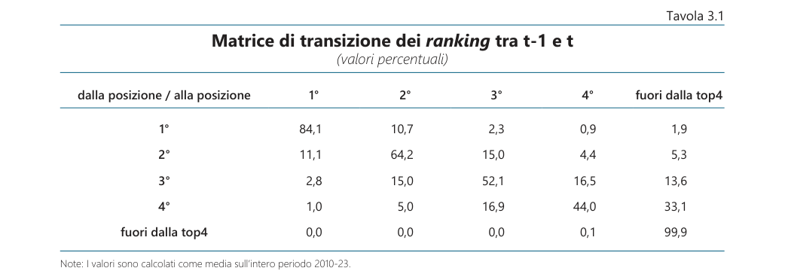
Tavola 3.1 del Rapporto: probabilità di passare da una posizione in classifica (riga) a un’altra (colonna) fra un anno e il successivo, media 2010-23.
In parole semplici: si legge per righe. Chi è primo resta primo l’anno dopo nell’84% dei casi; chi è quarto resta quarto nel 44% e esce dalle prime quattro nel 33%; chi è fuori entra fra le prime quattro quasi mai.
Come si legge. Ogni riga somma a 100. Lo 0,0 dell’ultima riga dipende dal fatto che «fuori dalla top 4» mette insieme moltissime imprese piccole: per quelle appena sotto la quarta posizione la probabilità di entrare è più alta.6
3.3.10 Figura 3.9, pagina 42: instabilità delle quote dei leader
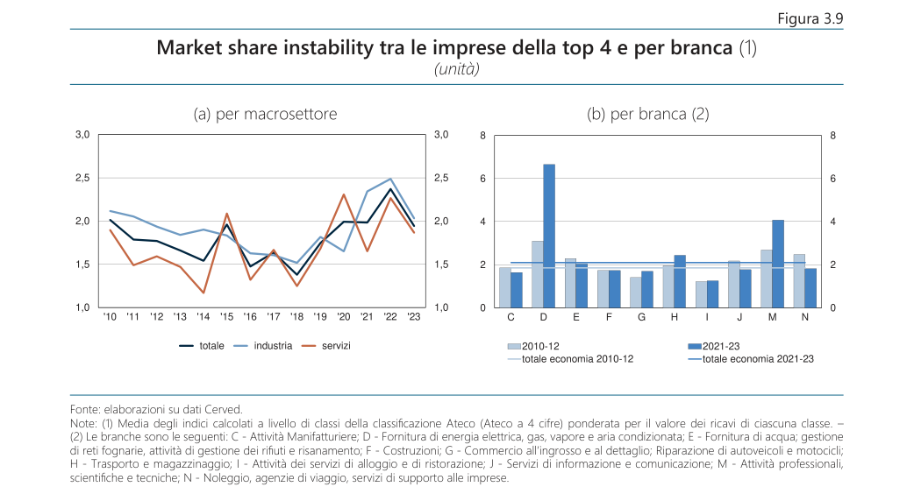
Figura 3.9 del Rapporto: market share instability delle prime 4 imprese per macrosettore (a) e per sezione (b).
In parole semplici: in un anno le quote delle prime quattro imprese cambiano in media di circa 2 punti; dal 2018 i cambiamenti aumentano, e sono più forti nell’energia (D) e nelle professioni (M).
Che cosa ne ricava il Rapporto. Il valore italiano è sotto quello stimato dall’OCSE per i paesi europei (fra 2,5 e 3,5 nel 2019, contro poco più di 1,5 in Italia); la crescita recente, insieme al calo di entrenchment e RPI, indica più competizione fra i leader [1, p. 41].
3.3.11 Figura 3.10, pagina 43: instabilità delle quote per divisione
La figura 3.10 non è riprodotta in questa versione: si trova a p. 43 del Rapporto [1], consultabile su https://www.bancaditalia.it/pubblicazioni/altri-rapporti/2026-concorrenza-in-italia/Rapporto-BI-AGCM-20261105.pdf. La descrizione che segue si riferisce a quella figura.
In parole semplici: la maggior parte dei settori sta sotto la linea tratteggiata, cioè le quote si muovono meno che nel 2010. Fanno eccezione energia (35), trasporto marittimo (50) e architettura e ingegneria (71); nel trasporto aereo (51) l’instabilità si è più che dimezzata, segno di un mercato più consolidato.
3.4 Appendice C: confronto con i conti nazionali e con l’Europa
3.4.1 Figura C.1, pagine 54-55: due fonti per lo stesso markup
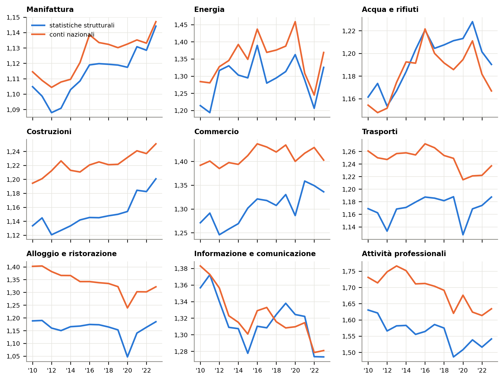
Figura 12: Ricostruzione della figura C.1 (a): markup per sezione calcolato con le statistiche strutturali sulle imprese e con i conti nazionali, Italia, livelli. Elaborazione su dati Eurostat.
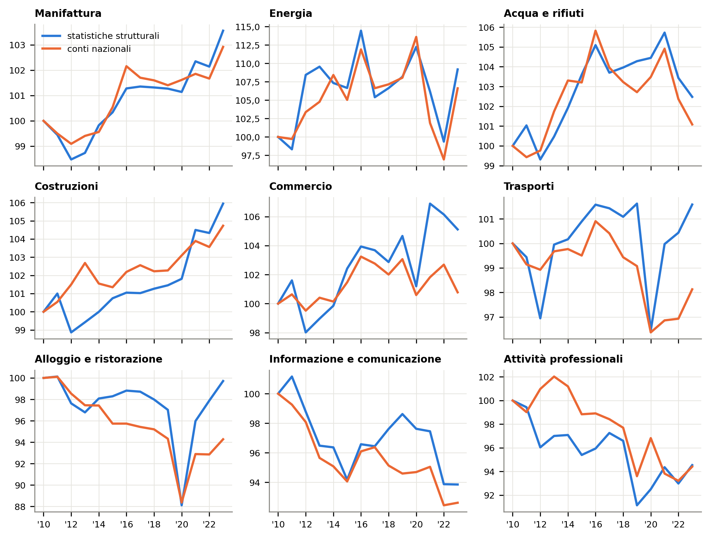
Figura 13: Ricostruzione della figura C.1 (b): come il pannello (a), indice 2010 = 100. Elaborazione su dati Eurostat.
In parole semplici: lo stesso markup calcolato con due fonti statistiche diverse dà livelli diversi ma andamenti simili; i conti nazionali sono più lisci perché incorporano correzioni e stime dell’economia sommersa.
Che cosa ne ricava il Rapporto. Le tendenze sono robuste alla scelta della fonte; i livelli e le oscillazioni di breve periodo vanno letti con cautela, soprattutto nel commercio e nelle professioni [1, pp. 54–55].
Confronto con il Rapporto. Ricostruzione: manifattura nei conti nazionali da 1,11 a 1,15; commercio da 1,39 a 1,40 nei conti nazionali e da 1,27 a 1,34 nelle statistiche strutturali. Rapporto: le due fonti hanno andamenti simili, con le differenze maggiori nel commercio e nelle attività professionali; il commercio è statico nei conti nazionali e in crescita nelle statistiche strutturali (pp. 54-57). Qui il markup dei conti nazionali è calcolato per sezione, perché i conti nazionali Eurostat non hanno il dettaglio a 4 cifre.
Fonte e calcolo. Chiamate alla fonte e codice che produce i dati del grafico.
# Fonte: Eurostat, conti nazionali per branca (nama_10_a64), API statistics 1.0, formato JSON-stat
# Chiamate eseguite:
# GET https://ec.europa.eu/eurostat/api/dissemination/statistics/1.0/data/nama_10_a64?geo=IT&
# geo=DE&geo=FR&geo=ES&geo=EU27_2020&unit=CP_MEUR&na_item=P1&na_item=B1G&na_item=D1&
# na_item=D29X39&sinceTimePeriod=2010&lang=EN
def dati_C1():
sezioni_sbs, _ = dati_14()
na = conti_nazionali()
sezioni_na = na[na.geo == "IT"].pivot(index="year", columns="sec", values="mu")
return sezioni_sbs, sezioni_na3.4.2 Figura C.2, pagina 56: markup per settore in Italia, Germania, Francia, Spagna e UE
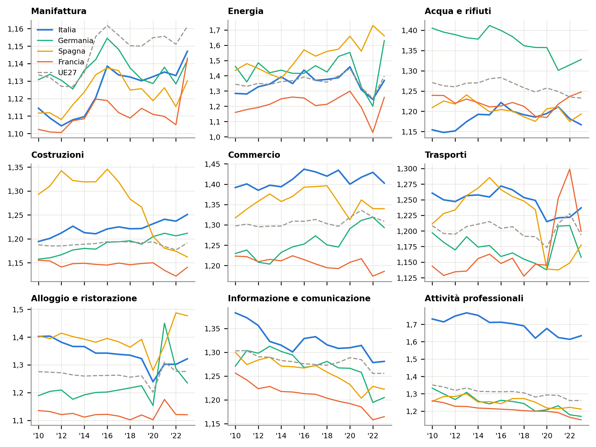
Figura 14: Ricostruzione della figura C.2: markup per sezione in Italia, Germania, Spagna, Francia e Unione europea. Elaborazione su dati Eurostat, conti nazionali per branca.
In parole semplici: nell’industria l’Italia è in linea o sotto gli altri paesi; nei servizi, soprattutto commercio e professioni, sta sopra, ma la distanza si riduce.
Confronto con il Rapporto. Ricostruzione con i conti nazionali, la fonte che il Rapporto indica come adatta ai confronti fra paesi (p. 55). Media 2021-23 delle attività professionali: Italia 1,62, UE27 1,27; commercio: Italia 1,42, UE27 1,32; manifattura: Italia 1,14, UE27 1,16. Rapporto: Italia in linea o sotto gli altri paesi nell’industria, sopra nei servizi con una tendenza a convergere (pp. 55-56). La serie tedesca dell’energia resta più alta di quella del Rapporto, che non precisa il livello di dettaglio usato; qui il calcolo è per sezione.
Fonte e calcolo. Chiamate alla fonte e codice che produce i dati del grafico.
# Fonte: Eurostat, conti nazionali per branca (nama_10_a64), API statistics 1.0, formato JSON-stat
# Chiamate eseguite:
# GET https://ec.europa.eu/eurostat/api/dissemination/statistics/1.0/data/nama_10_a64?geo=IT&
# geo=DE&geo=FR&geo=ES&geo=EU27_2020&unit=CP_MEUR&na_item=P1&na_item=B1G&na_item=D1&
# na_item=D29X39&sinceTimePeriod=2010&lang=EN
def dati_C2():
return conti_nazionali()3.4.3 Figura C.3, pagina 57: livelli medi 2021-23 per paese
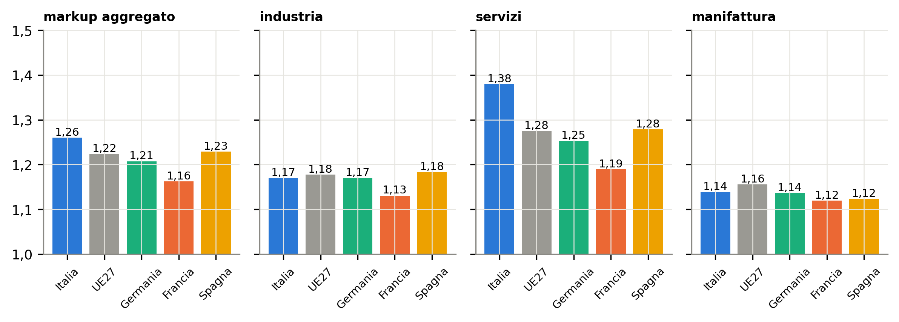
Figura 15: Ricostruzione della figura C.3, barre dei conti nazionali: markup medi 2021-23 per paese e macrosettore. Elaborazione su dati Eurostat, conti nazionali per branca.
In parole semplici: con i conti nazionali l’Italia ha il markup complessivo più alto fra i paesi considerati, per effetto dei servizi; nella manifattura è in linea.
Confronto con il Rapporto. Ricostruzione (conti nazionali, media 2021-23): markup aggregato Italia 1,26, UE27 1,22, Germania 1,21, Francia 1,16, Spagna 1,23; servizi Italia 1,38; manifattura Italia 1,14. Rapporto: 1,25, 1,23, 1,21, 1,17, 1,22; servizi 1,40; manifattura 1,14 (p. 57). Le barre delle statistiche strutturali non sono ricostruite: per la Germania e per i servizi il calcolo per classe a 4 cifre non riproduce i valori del Rapporto.
Fonte e calcolo. Chiamate alla fonte e codice che produce i dati del grafico.
# Fonte: Eurostat, conti nazionali per branca (nama_10_a64), API statistics 1.0, formato JSON-stat
# Chiamate eseguite:
# GET https://ec.europa.eu/eurostat/api/dissemination/statistics/1.0/data/nama_10_a64?geo=IT&
# geo=DE&geo=FR&geo=ES&geo=EU27_2020&unit=CP_MEUR&na_item=P1&na_item=B1G&na_item=D1&
# na_item=D29X39&sinceTimePeriod=2010&lang=EN
def dati_C3():
na = conti_nazionali()
gruppi = {"markup aggregato": SECTIONS, "industria": INDUSTRIA, "servizi": SERVIZI, "manifattura": ["C"]}
righe = []
for nome, secs in gruppi.items():
annuale = aggregate(na[na.sec.isin(secs)], ["geo", "year"]) # media pesata per la produzione
media = annuale[annuale.year.between(2021, 2023)].groupby("geo").mu.mean() # media semplice 2021-23
righe += [{"gruppo": nome, "geo": g, "markup": media[g]} for g in media.index]
return pd.DataFrame(righe).pivot(index="gruppo", columns="geo", values="markup")3.4.4 Figura C.4, pagina 58: il peso del lavoro autonomo nel confronto fra paesi
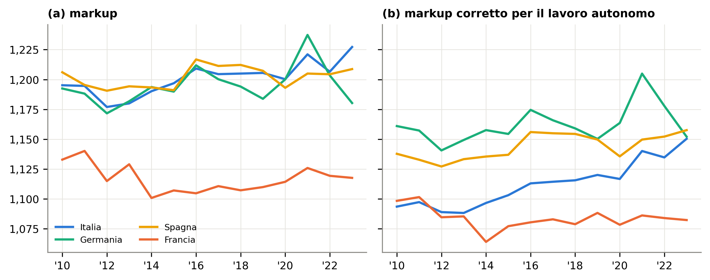
Figura 16: Ricostruzione della figura C.4: markup (a) e markup corretto per il lavoro autonomo (b) in Italia, Germania, Spagna e Francia. Elaborazione su dati Eurostat, statistiche strutturali sulle imprese.
In parole semplici: senza correzione l’Italia sembra avere margini più alti degli altri; tolta la parte di margine che è in realtà il compenso dei lavoratori autonomi, numerosi in Italia, l’Italia torna in linea con la media europea e sotto Spagna e Germania.
Che cosa ne ricava il Rapporto. Una parte del maggior margine italiano riflette la struttura dell’occupazione, non più potere di mercato: è la ragione per cui il confronto dei livelli fra paesi richiede cautela [1, pp. 57–58].
Confronto con il Rapporto. Ricostruzione, markup corretto nel 2023: Italia 1,150, Germania 1,152, Spagna 1,158, Francia 1,082; senza correzione Italia 1,227, il valore più alto. Rapporto: con la correzione l’Italia è in linea con la media europea e sotto Spagna e Germania (pp. 57-58).
Fonte e calcolo. Chiamate alla fonte e codice che produce i dati del grafico.
# Fonte: Eurostat, statistiche strutturali sulle imprese (SBS), API SDMX 2.1, formato SDMX-CSV
# Chiamate eseguite:
# GET https://ec.europa.eu/eurostat/api/dissemination/sdmx/2.1/data/sbs_na_ind_r2/A..V12120+
# V12170+V16110+V16130+V13310.IT+DE+FR+ES?format=SDMX-CSV&startPeriod=2008&endPeriod=2020
# GET https://ec.europa.eu/eurostat/api/dissemination/sdmx/2.1/data/sbs_na_con_r2/A..V12120+
# V12170+V16110+V16130+V13310.IT+DE+FR+ES?format=SDMX-CSV&startPeriod=2008&endPeriod=2020
# GET https://ec.europa.eu/eurostat/api/dissemination/sdmx/2.1/data/sbs_na_dt_r2/A..V12120+
# V12170+V16110+V16130+V13310.IT+DE+FR+ES?format=SDMX-CSV&startPeriod=2008&endPeriod=2020
# GET https://ec.europa.eu/eurostat/api/dissemination/sdmx/2.1/data/sbs_na_1a_se_r2/A..V12120+
# V12170+V16110+V16130+V13310.IT+DE+FR+ES?format=SDMX-CSV&startPeriod=2008&endPeriod=2020
# GET https://ec.europa.eu/eurostat/api/dissemination/sdmx/2.1/data/sbs_ovw_act/
# A..VAL_OUT_MEUR+GOS_MEUR+EMP_NR+SAL_NR+EXPN_SAL_BEN_MEUR.IT+DE+FR+ES?format=SDMX-CSV&
# startPeriod=2021
def dati_C4():
w = sbs()
w = w[w.year.between(2010, 2023)]
return aggregate(w, ["geo", "year"]).merge(aggregate(w, ["geo", "year"], "mu_c"), on=["geo", "year"])3.5 Appendice D: dettagli sul markup
Le tabelle D.1 e D.2 (pagine 59-61) riportano, per sezione e per divisione, il peso sul valore della produzione e il markup medio in quattro periodi; la tabella D.3 (pagina 62) la quota di lavoratori autonomi per sezione, dal 4% di acqua e rifiuti al 61% delle attività professionali. Spiegano perché il totale «1,20 → 1,23» della sintesi convive con medie di sottoperiodo 1,19, 1,20 e 1,21: i primi sono valori di singoli anni (2010 e 2023), i secondi medie di più anni.
3.5.1 Figura D.1, pagina 62: markup e beni immateriali
La figura D.1 non è riprodotta in questa versione: si trova a p. 62 del Rapporto [1], consultabile su https://www.bancaditalia.it/pubblicazioni/altri-rapporti/2026-concorrenza-in-italia/Rapporto-BI-AGCM-20261105.pdf. La descrizione che segue si riferisce a quella figura.
In parole semplici: i settori che investono di più in beni immateriali (software, marchi, ricerca) hanno margini più alti e stabili; gli altri due gruppi salgono e riducono la distanza.
3.5.2 Figura D.2, pagina 63: markup corretto e non corretto
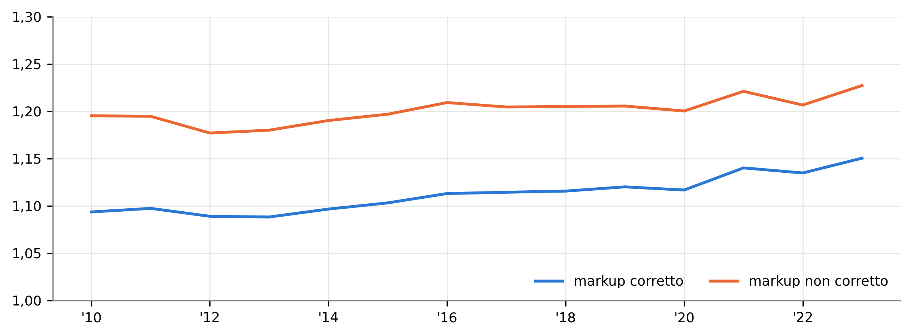
Figura 17: Ricostruzione della figura D.2: markup aggregato non corretto e corretto per il lavoro autonomo. Elaborazione su dati Eurostat, statistiche strutturali sulle imprese.
In parole semplici: la correzione abbassa il livello del markup (da circa 1,20 a circa 1,10) ma ne lascia simile l’andamento, anzi la crescita diventa un po’ più forte.
Confronto con il Rapporto. Ricostruzione: markup corretto da 1,094 nel 2010 a 1,150 nel 2023, 5,7 punti. Rapporto: crescita di 7 punti (nota 11, p. 13); la ricostruzione con i dati Eurostat dà una crescita un po’ minore, sempre superiore a quella del markup non corretto.
Fonte e calcolo. Chiamate alla fonte e codice che produce i dati del grafico.
# Fonte: Eurostat, statistiche strutturali sulle imprese (SBS), API SDMX 2.1, formato SDMX-CSV
# Chiamate eseguite:
# GET https://ec.europa.eu/eurostat/api/dissemination/sdmx/2.1/data/sbs_na_ind_r2/A..V12120+
# V12170+V16110+V16130+V13310.IT+DE+FR+ES?format=SDMX-CSV&startPeriod=2008&endPeriod=2020
# GET https://ec.europa.eu/eurostat/api/dissemination/sdmx/2.1/data/sbs_na_con_r2/A..V12120+
# V12170+V16110+V16130+V13310.IT+DE+FR+ES?format=SDMX-CSV&startPeriod=2008&endPeriod=2020
# GET https://ec.europa.eu/eurostat/api/dissemination/sdmx/2.1/data/sbs_na_dt_r2/A..V12120+
# V12170+V16110+V16130+V13310.IT+DE+FR+ES?format=SDMX-CSV&startPeriod=2008&endPeriod=2020
# GET https://ec.europa.eu/eurostat/api/dissemination/sdmx/2.1/data/sbs_na_1a_se_r2/A..V12120+
# V12170+V16110+V16130+V13310.IT+DE+FR+ES?format=SDMX-CSV&startPeriod=2008&endPeriod=2020
# GET https://ec.europa.eu/eurostat/api/dissemination/sdmx/2.1/data/sbs_ovw_act/
# A..VAL_OUT_MEUR+GOS_MEUR+EMP_NR+SAL_NR+EXPN_SAL_BEN_MEUR.IT+DE+FR+ES?format=SDMX-CSV&
# startPeriod=2021
def dati_D2():
w = it_()
return aggregate(w, ["year"], "mu_c").merge(aggregate(w, ["year"]), on="year").set_index("year")3.6 Appendice E: dettagli sulla concentrazione
La tabella E.1 (pagine 64-65) elenca i 37 settori a 4 cifre in cui la concorrenza è locale, dal pane ai bar, dalla distribuzione elettrica agli studi legali.
3.6.1 Figura E.1, pagina 67: correzione per i mercati locali
La figura E.1 non è riprodotta in questa versione: si trova a p. 67 del Rapporto [1], consultabile su https://www.bancaditalia.it/pubblicazioni/altri-rapporti/2026-concorrenza-in-italia/Rapporto-BI-AGCM-20261105.pdf. La descrizione che segue si riferisce a quella figura.
In parole semplici: misurare i settori locali regione per regione fa salire la concentrazione (le linee tratteggiate stanno sopra), di più nei servizi, ma non cambia l’andamento nel tempo.
Che cosa ne ricava il Rapporto. HHI +7,4% e CR4 +4,1% nella manifattura; HHI +18,3% e CR4 +5,9% nei servizi [1, p. 66].
3.6.2 Figura E.2, pagina 68: dimensione del mercato e concentrazione
La figura E.2 non è riprodotta in questa versione: si trova a p. 68 del Rapporto [1], consultabile su https://www.bancaditalia.it/pubblicazioni/altri-rapporti/2026-concorrenza-in-italia/Rapporto-BI-AGCM-20261105.pdf. La descrizione che segue si riferisce a quella figura.
In parole semplici: i mercati più grandi tendono a essere meno concentrati, perché c’è spazio per più imprese; la relazione è debole e resta simile fra il 2010 e il 2023.
3.6.3 Figura E.3, pagina 68: dispersione della concentrazione fra settori
La figura E.3 non è riprodotta in questa versione: si trova a p. 68 del Rapporto [1], consultabile su https://www.bancaditalia.it/pubblicazioni/altri-rapporti/2026-concorrenza-in-italia/Rapporto-BI-AGCM-20261105.pdf. La descrizione che segue si riferisce a quella figura.
In parole semplici: il settore «tipico» (punto rosso, la mediana) ha un CR4 intorno al 40% e non cambia nel tempo; anche la metà centrale dei settori (la scatola) resta ferma.
3.6.4 Figura E.4, pagina 69: HHI e CR4 a confronto
La figura E.4 non è riprodotta in questa versione: si trova a p. 69 del Rapporto [1], consultabile su https://www.bancaditalia.it/pubblicazioni/altri-rapporti/2026-concorrenza-in-italia/Rapporto-BI-AGCM-20261105.pdf. La descrizione che segue si riferisce a quella figura.
In parole semplici: i due indici classificano quasi sempre allo stesso modo un settore: l’83% dei punti cade nelle aree in cui entrambi dicono «poco», «medio» o «molto» concentrato. Per questo il Rapporto può usare soprattutto il CR4, più semplice e meno sensibile ai dati mancanti.
3.7 Appendice F: dettagli sul dinamismo
3.7.1 Tavola F.1, pagina 70: matrice di transizione a tre anni
La tavola F.1 non è riprodotta in questa versione: si trova a p. 70 del Rapporto [1], consultabile su https://www.bancaditalia.it/pubblicazioni/altri-rapporti/2026-concorrenza-in-italia/Rapporto-BI-AGCM-20261105.pdf. La descrizione che segue si riferisce a quella tavola.
In parole semplici: anche a tre anni di distanza il primo resta primo in tre casi su quattro (73,7%); chi è fuori dalle prime quattro quasi mai vi entra.
3.7.2 Figura F.1, pagina 71: perché cambia la natalità netta
La figura F.1 non è riprodotta in questa versione: si trova a p. 71 del Rapporto [1], consultabile su https://www.bancaditalia.it/pubblicazioni/altri-rapporti/2026-concorrenza-in-italia/Rapporto-BI-AGCM-20261105.pdf. La descrizione che segue si riferisce a quella figura.
In parole semplici: il saldo fra nascite e chiusure cambia soprattutto perché cambiano le chiusure; lo spostamento dell’economia verso settori con più nascite aiuta, ma poco.
3.7.3 Figura F.2, pagine 71-72: nascite e chiusure per sezione
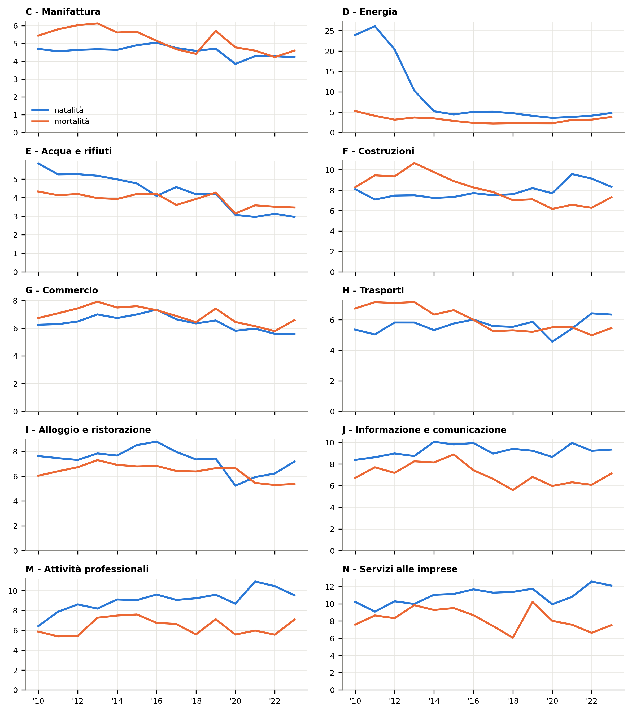
Figura 18: Ricostruzione della figura F.2: tassi di natalità e mortalità per sezione Ateco. Elaborazione su dati Eurostat, demografia d’impresa.
In parole semplici: nella manifattura chiudono sempre più imprese di quante ne nascano; nell’energia le nascite crollano dopo il 2011, finiti gli incentivi alle rinnovabili; nelle costruzioni le nascite risalgono con i bonus edilizi; informazione e comunicazione e professioni nascono più di quanto chiudano negli ultimi anni.
Confronto con il Rapporto. Ricostruzione con Eurostat: gli andamenti per sezione coincidono con quelli del Rapporto (crollo delle nascite nell’energia dopo il 2011, mortalità sopra la natalità nella manifattura, ripresa delle nascite nelle costruzioni dal 2021), mentre i livelli differiscono per le regole di conteggio diverse da quelle dell’Istat.
Fonte e calcolo. Chiamate alla fonte e codice che produce i dati del grafico.
# Fonte: Eurostat, demografia d'impresa, API statistics 1.0, formato JSON-stat
# Chiamate eseguite:
# GET https://ec.europa.eu/eurostat/api/dissemination/statistics/1.0/data/bd_9ac_l_form_r2?
# geo=IT&geo=EU27_2020&nace_r2=C&nace_r2=D&nace_r2=E&nace_r2=F&nace_r2=G&nace_r2=H&
# nace_r2=I&nace_r2=J&nace_r2=M&nace_r2=N&leg_form=TOTAL&indic_sb=V11910&indic_sb=V11920&
# indic_sb=V11930&lang=EN
# GET https://ec.europa.eu/eurostat/api/dissemination/statistics/1.0/data/bd_l_form?geo=IT&
# geo=EU27_2020&nace_r2=C&nace_r2=D&nace_r2=E&nace_r2=F&nace_r2=G&nace_r2=H&nace_r2=I&
# nace_r2=J&nace_r2=M&nace_r2=N&leg_form=TOTAL&indic_sbs=ENT_NR&indic_sbs=ENT_BRTH_NR&
# indic_sbs=ENT_DTH_NR&lang=EN
def dati_F2():
d = demo_eurostat()
return rates(d[d.geo == "IT"], ["sec", "year"])3.7.4 Figura F.3, pagina 73: nuovi ingressi fra le prime dieci
La figura F.3 non è riprodotta in questa versione: si trova a p. 73 del Rapporto [1], consultabile su https://www.bancaditalia.it/pubblicazioni/altri-rapporti/2026-concorrenza-in-italia/Rapporto-BI-AGCM-20261105.pdf. La descrizione che segue si riferisce a quella figura.
In parole semplici: come la figura 3.7, ma per le prime dieci: anche qui i nuovi ingressi in testa sono pochi.
3.7.5 Figura F.4, pagina 73: rank persistence index delle prime dieci
La figura F.4 non è riprodotta in questa versione: si trova a p. 73 del Rapporto [1], consultabile su https://www.bancaditalia.it/pubblicazioni/altri-rapporti/2026-concorrenza-in-italia/Rapporto-BI-AGCM-20261105.pdf. La descrizione che segue si riferisce a quella figura.
In parole semplici: anche allargando lo sguardo alle prime dieci la classifica resta molto stabile.
3.7.6 Figura F.5, pagina 74: rank persistence index nell’industria
La figura F.5 non è riprodotta in questa versione: si trova a p. 74 del Rapporto [1], consultabile su https://www.bancaditalia.it/pubblicazioni/altri-rapporti/2026-concorrenza-in-italia/Rapporto-BI-AGCM-20261105.pdf. La descrizione che segue si riferisce a quella figura.
In parole semplici: il calo recente della stabilità delle classifiche nell’industria viene dalla manifattura e, ancora di più, da energia, acqua e rifiuti e costruzioni.
3.7.7 Figura F.6, pagina 75: cambi di posizione fra le prime quattro
La figura F.6 non è riprodotta in questa versione: si trova a p. 75 del Rapporto [1], consultabile su https://www.bancaditalia.it/pubblicazioni/altri-rapporti/2026-concorrenza-in-italia/Rapporto-BI-AGCM-20261105.pdf. La descrizione che segue si riferisce a quella figura.
In parole semplici: nei settori in cui nessuna impresa nuova entra fra le prime quattro, nella grande maggioranza dei casi le quattro restano anche nello stesso ordine; solo in una piccola quota due di esse si scambiano il posto.
3.7.8 Figura F.7, pagina 75: instabilità delle quote fra le prime dieci
La figura F.7 non è riprodotta in questa versione: si trova a p. 75 del Rapporto [1], consultabile su https://www.bancaditalia.it/pubblicazioni/altri-rapporti/2026-concorrenza-in-italia/Rapporto-BI-AGCM-20261105.pdf. La descrizione che segue si riferisce a quella figura.
In parole semplici: fra le prime dieci imprese le quote si muovono un po’ di più che fra le prime quattro, circa 3 punti all’anno, con lo stesso aumento dopo il 2018.
4 Quello che il Rapporto non dice
Il Rapporto descrive; non cerca le cause dell’andamento dei margini e lo dichiara [1, p. 9]. Alcuni limiti aiutano a leggerlo correttamente:
- i settori Ateco non sono i mercati dell’antitrust: un settore poco concentrato può contenere mercati molto concentrati, e viceversa;
- concentrazione e stabilità dei leader si basano sulle sole società di capitali, quindi sono meno affidabili dove prevalgono ditte individuali e studi professionali;
- il markup misurato con i costi operativi non è il markup teorico sul costo marginale: settori con molti costi fissi o molti autonomi appaiono più redditizi di quanto siano;
- le correlazioni del riquadro sulle professioni descrivono un’associazione su sette attività, non un effetto causale.
5 Codice di calcolo comune
Le funzioni usate da tutti i grafici ricostruiti: lettura dei conti delle imprese per classe a 4 cifre, calcolo del markup e del markup corretto, media ponderata per il valore della produzione, scomposizione within, between e cross, lettura dei conti nazionali, lettura della demografia d’impresa e calcolo dei tassi. Il valore della produzione e il margine operativo lordo sono letti per classe Ateco a 4 cifre dalle statistiche strutturali Eurostat: fino al 2020 dai quattro dataset per sezione, dal 2021 dal dataset unico che li ha sostituiti.
@lru_cache(maxsize=1)
def sbs() -> pd.DataFrame:
"""Classi NACE a 4 cifre (Eurostat SBS) con markup e markup corretto: IT, DE, FR, ES."""
_GRUPPO[0] = "sbs"
w = add_markup(load_sbs(("IT", "DE", "FR", "ES")))
anomale = (w.mol / w.vp > LERNER_MAX) & w.mu.notna()
# elenco in variabile di modulo: un DataFrame in w.attrs rompe merge e concat di pandas
ANOMALE[:] = w.loc[anomale & w.year.between(A0, A1), ["geo", "year", "nace4"]].to_dict("records")
w.loc[anomale, ["mu", "mu_c"]] = np.nan
w["macro"] = np.where(w.sec.isin(INDUSTRIA), "Industria", "Servizi")
return w
def it_() -> pd.DataFrame:
w = sbs()
return w[(w.geo == "IT") & w.year.between(A0, A1)].copy()
@lru_cache(maxsize=4)
def load_sbs(geos: tuple[str, ...] = ("IT",)) -> pd.DataFrame:
"""SBS per classe NACE a 4 cifre: geo, year, nace4 (4 cifre), sec, div, vp, mol, emp, sal, pc."""
g = "+".join(geos)
parts = []
for ds in LEGACY:
d = pd.read_csv(io.BytesIO(_get(f"{SDMX21}/{ds}/A..{'+'.join(LEG_IND)}.{g}"
"?format=SDMX-CSV&startPeriod=2008&endPeriod=2020")), dtype=str)
d["var"] = d["indic_sb"].map(LEG_IND)
parts.append(d)
d = pd.read_csv(io.BytesIO(_get(f"{SDMX21}/sbs_ovw_act/A..{'+'.join(OVW_IND)}.{g}"
"?format=SDMX-CSV&startPeriod=2021")), dtype=str)
d["var"] = d["indic_sbs"].map(OVW_IND)
parts.append(d)
x = pd.concat([p[["geo", "nace_r2", "var", "TIME_PERIOD", "OBS_VALUE"]] for p in parts])
x["sec"] = x.nace_r2.map(section)
x = x[x.sec.isin(SECTIONS)].copy()
x["year"] = x.TIME_PERIOD.astype(int)
x["value"] = pd.to_numeric(x.OBS_VALUE, errors="coerce")
w = x.pivot_table(index=["geo", "year", "nace_r2", "sec"], columns="var", values="value",
aggfunc="first").reset_index()
w["nace4"] = w.nace_r2.map(digits)
w["div"] = w.nace4.str[:2].astype(int)
return w.drop(columns="nace_r2")
def add_markup(w: pd.DataFrame) -> pd.DataFrame:
"""Markup per classe; markup corretto per il lavoro autonomo dove occupati, dipendenti e costo
del personale sono disponibili."""
w = w.copy()
ok = (w.vp > 0) & (w.vp - w.mol > 0)
w["mu"] = np.where(ok, w.vp / (w.vp - w.mol), np.nan)
aut = (w.emp - w.sal).clip(lower=0)
costo_medio = w.pc / w.sal.where(w.sal > 0)
w["mol_c"] = w.mol - aut * costo_medio
okc = ok & (w.vp - w.mol_c > 0) & w.mol_c.notna()
w["mu_c"] = np.where(okc, w.vp / (w.vp - w.mol_c), np.nan)
w["aut"] = aut
return w
def wavg(g: pd.DataFrame, col: str = "mu", wcol: str = "vp") -> float:
g = g.dropna(subset=[col, wcol])
return float((g[col] * g[wcol]).sum() / g[wcol].sum()) if len(g) else np.nan
def aggregate(w: pd.DataFrame, by: list[str], col: str = "mu") -> pd.DataFrame:
return (w.groupby(by).apply(lambda g: wavg(g, col), include_groups=False)
.rename(col).reset_index())
def decompose(w: pd.DataFrame, t0: int, t1: int, col: str = "mu") -> dict:
"""Scomposizione shift-share della variazione del markup aggregato fra t0 e t1 (App. D):
within = somma s0 dmu, between = somma ds mu0, cross = somma ds dmu; classi presenti in entrambi
gli anni, pesi = quote di VP sul totale delle classi comuni."""
a = w[w.year == t0].set_index("nace4")[[col, "vp"]].dropna()
b = w[w.year == t1].set_index("nace4")[[col, "vp"]].dropna()
k = a.index.intersection(b.index)
a, b = a.loc[k], b.loc[k]
s0, s1 = a.vp / a.vp.sum(), b.vp / b.vp.sum()
dmu, ds = b[col] - a[col], s1 - s0
m0 = (s0 * a[col]).sum()
return {"periodo": f"{t0}-{t1}", "variazione": (s1 * b[col]).sum() - m0,
"within": (s0 * dmu).sum(), "between": (ds * a[col]).sum(), "cross": (ds * dmu).sum(),
"base": m0, "classi": len(k)}
@lru_cache(maxsize=1)
def conti_nazionali() -> pd.DataFrame:
"""Conti nazionali Eurostat per sezione NACE: produzione (P1) e margine operativo lordo.
MOL = valore aggiunto lordo (B1G) - altre imposte nette sulla produzione (D29X39) - redditi da
lavoro dipendente (D1), cioè risultato lordo di gestione e reddito misto, come nel MOL di bilancio."""
_GRUPPO[0] = "na"
geo = "&".join(f"geo={g}" for g in ["IT", "DE", "FR", "ES", "EU27_2020"])
a = ad._jsonstat("nama_10_a64", f"{geo}&unit=CP_MEUR&na_item=P1&na_item=B1G&na_item=D1&na_item=D29X39"
"&sinceTimePeriod=2010")
a = a.pivot_table(index=["geo", "nace_r2", "time"], columns="na_item", values="value").reset_index()
a["year"] = a.time.astype(int)
a = a[a.nace_r2.isin(SECTIONS) & a.year.between(A0, A1)].rename(columns={"nace_r2": "sec", "P1": "vp"})
a["mol"] = a.B1G - a.D29X39 - a.D1
a["mu"] = a.vp / (a.vp - a.mol)
return a[["geo", "sec", "year", "vp", "mol", "mu"]]
@lru_cache(maxsize=1)
def demo_eurostat() -> pd.DataFrame:
_GRUPPO[0] = "demo_eurostat"
d = load_demography(("IT", "EU27_2020"))
return d[d.year.between(A0, A1)].copy()
@lru_cache(maxsize=2)
def load_demography(geos: tuple[str, ...] = ("IT", "EU27_2020")) -> pd.DataFrame:
"""Imprese attive, nate e cessate per sezione (C-N senza K, L): geo, year, sec, attive, nate, cessate.
Fino al 2018 bd_9ac_l_form_r2, dal 2019 bd_l_form (serie nuova)."""
g = "&".join(f"geo={x}" for x in geos)
s = "&".join(f"nace_r2={x}" for x in SECTIONS)
old = _jsonstat("bd_9ac_l_form_r2", f"{g}&{s}&leg_form=TOTAL&indic_sb=V11910&indic_sb=V11920"
"&indic_sb=V11930")
old["var"] = old.indic_sb.map({"V11910": "attive", "V11920": "nate", "V11930": "cessate"})
old["fonte"] = "bd_9ac_l_form_r2"
new = _jsonstat("bd_l_form", f"{g}&{s}&leg_form=TOTAL&indic_sbs=ENT_NR&indic_sbs=ENT_BRTH_NR"
"&indic_sbs=ENT_DTH_NR")
new["var"] = new.indic_sbs.map({"ENT_NR": "attive", "ENT_BRTH_NR": "nate", "ENT_DTH_NR": "cessate"})
new["fonte"] = "bd_l_form"
x = pd.concat([old, new])
x["year"] = x.time.astype(int)
x = x[x.year >= 2008]
# per ogni cella preferisce la serie nuova (bd_l_form), altrimenti la vecchia
x["pri"] = (x.fonte == "bd_l_form").astype(int)
x = x.dropna(subset=["value"]).sort_values("pri").drop_duplicates(
["geo", "year", "nace_r2", "var"], keep="last")
w = x.pivot_table(index=["geo", "year", "nace_r2"], columns="var", values="value",
aggfunc="first").reset_index().rename(columns={"nace_r2": "sec"})
src = x.groupby(["geo", "year", "nace_r2"]).fonte.agg(lambda s: "+".join(sorted(set(s))))
w["fonte"] = src.values if len(src) == len(w) else None
return w.dropna(subset=["attive", "nate", "cessate"])
def rates(d: pd.DataFrame, by: list[str]) -> pd.DataFrame:
"""Tassi di natalità, mortalità e natalità netta (% delle attive) sulla somma delle sezioni."""
g = d.groupby(by)[["attive", "nate", "cessate"]].sum(min_count=1).reset_index()
g["natalita"] = 100 * g.nate / g.attive
g["mortalita"] = 100 * g.cessate / g.attive
g["netta"] = g.natalita - g.mortalita
return g
@lru_cache(maxsize=1)
def demo_istat() -> pd.DataFrame:
_GRUPPO[0] = "demo_istat"
return ad.load_istat_demo()["serie"].set_index("year").loc[A0:A1]
@lru_cache(maxsize=1)
def load_istat_demo() -> dict[str, pd.DataFrame]:
"""Tavole Istat della demografia d'impresa: 'serie' (2006-2023, totale) e 'macro' (2018-2023)."""
html = _get(ISTAT_DEMO_PAGE, html=True).decode("utf-8", "ignore")
url = re.search(r'href="(https://www\.istat\.it/wp-content/uploads/[^"]+\.zip)"', html).group(1)
z = zipfile.ZipFile(io.BytesIO(_get(url)))
(name,) = [n for n in z.namelist() if n.lower().endswith(".xlsx")]
x = pd.ExcelFile(io.BytesIO(z.read(name)))
g = pd.read_excel(x, "grafico web", header=None).iloc[1:, [0, 5, 6]]
g.columns = ["year", "natalita", "mortalita"]
g["provvisorio"] = g.year.astype(str).str.contains(r"\(") # es. '2023(a)': dato provvisorio
g["year"] = pd.to_numeric(g.year.astype(str).str.extract(r"(\d{4})")[0], errors="coerce")
g = g.dropna(subset=["year", "natalita", "mortalita"])
g["year"] = g.year.astype(int)
g[["natalita", "mortalita"]] = g[["natalita", "mortalita"]].astype(float)
g["netta"] = g.natalita - g.mortalita
t2 = pd.read_excel(x, [s for s in x.sheet_names if s.strip() == "Tavola 2"][0], header=None)
rows, macro = [], None
for _, r in t2.iloc[3:].iterrows():
v = r.iloc[0]
if isinstance(v, str) and not re.match(r"\d{4}", v.strip()):
if v.strip().lower().startswith(("fonte", "nota", "(")):
break
macro = v.strip()
elif pd.notna(v) and macro and re.match(r"\d{4}", str(v)):
rows.append({"macro": macro, "year": int(str(v)[:4]), "natalita": float(r.iloc[1]), "nate": float(r.iloc[2]),
"mortalita": float(r.iloc[3]), "cessate": float(r.iloc[4]), "netta": float(r.iloc[5])})
return {"serie": g, "macro": pd.DataFrame(rows), "url": url}Riferimenti
Nota metodologica
Questo documento nasce dall’interazione di tre componenti. L’autore definisce le domande, esercita il giudizio critico e assume la responsabilità scientifica ed editoriale del risultato. Strumenti di intelligenza artificiale generativa sono impiegati a supporto della ricerca bibliografica, della lettura, della sintesi, della riorganizzazione argomentativa e della revisione del testo. Un’infrastruttura open source sviluppata dall’autore automatizza il reperimento, l’armonizzazione e il controllo dei dati dalle fonti statistiche ufficiali, e mantiene l’elaborazione documentata e riproducibile.
Le fonti sono pubblicamente accessibili e citate con la loro denominazione ufficiale; l’analisi è pertanto integralmente auditabile e replicabile da terzi a partire da esse. Le tabelle e i grafici sono elaborazioni dell’autore: calcoli, aggregazioni, trasformazioni e scelte di rappresentazione sono attribuibili all’autore e non agli enti produttori dei dati.
La responsabilità per le fonti utilizzate, le analisi condotte, le elaborazioni effettuate, le interpretazioni proposte e le conclusioni formulate resta interamente in capo all’autore. L’intelligenza artificiale è stata impiegata come ambiente di supporto cognitivo ed editoriale, non come fonte primaria, autore autonomo o sostituto del giudizio critico.
5.1 Note
Note
«I risultati non confermano, per il caso italiano, l’ipotesi di un aumento generalizzato del potere di mercato emersa nel dibattito internazionale degli ultimi anni.» [1, p. 44]↩︎
«Dal confronto Cerved-Istat condotto sull’anno 2012, risulta che Cerved rappresenta il 16 per cento delle imprese e l’81 per cento del fatturato complessivo.» [1, p. 27]↩︎
«Il markup, ossia il rapporto tra il prezzo di vendita e il costo marginale di produzione, rappresenta uno dei principali indicatori di potere di mercato utilizzati dalla letteratura economica, in quanto, in condizioni di perfetta concorrenza, i prezzi tendono a eguagliare i costi marginali.» [1, p. 13]↩︎
«Reuse of statistical data, metadata, publications, and other dissemination tools published on this website for commercial or non-commercial purposes is authorised provided the source is acknowledged.» [7]↩︎
«Nel caso italiano, l’aumento complessivo riflette invece soprattutto il recupero dei settori inizialmente caratterizzati da livelli di markup più bassi.» [1, p. 15]↩︎
«Per le imprese fuori dalla top 4 la probabilità di entrarvi è virtualmente zero.» [1, p. 40]↩︎